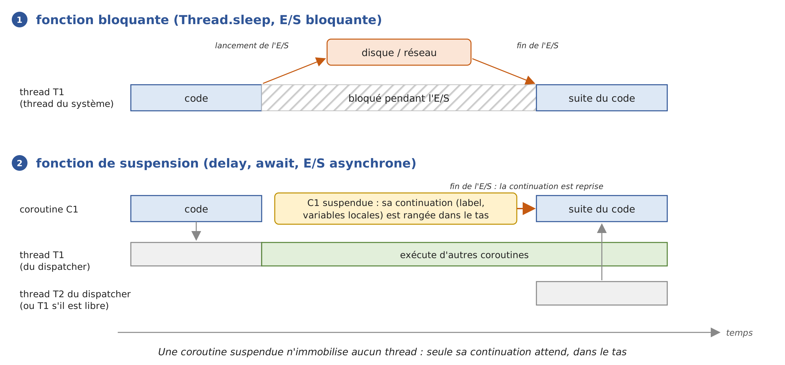
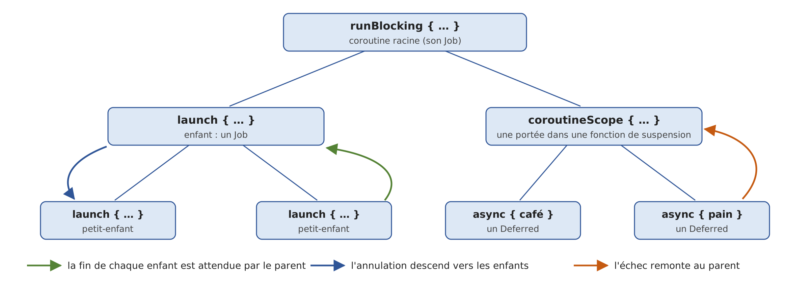

9. Asynchronous Programming with Coroutines
The previous chapter introduced threads: you can execute multiple pieces of code “at the same time,” synchronize them, and assign tasks to a thread pool via an executor ([ExecutorService]). This chapter addresses a related but distinct issue: how to write a program that waits a lot (for the disk, the network, or a database) without tying up threads during these waits.
This is the chapter where Kotlin diverges most from Java. The Java course presented two solutions: the [CompletableFuture<T>] class, whose behavior is extended using callback methods, and Java 21’s virtual threads, which allow you to write blocking code without blocking any system threads. Both of these tools remain available in Kotlin (they are classes of the JDK type), and we’ll revisit them. But Kotlin offers its own solution: coroutines:
- the language includes only a single keyword, [suspend], which marks a suspension function: a function that can pause in the middle of its execution, release the thread executing it, and then resume later at the same point with the same local variable values;
- the compiler transforms each suspension function into a “state machine” capable of pausing and resuming; we’ll see how;
- Everything else is provided by a library, kotlinx.coroutines: launch coroutines ([launch], [async]), wait for them ([join], [await]), wait without blocking ([delay]), choose the threads that execute them (the dispatchers), cancel them, limit their duration, and pass values between them ([Flow], [Channel]).
The resulting code reads from top to bottom like sequential code: it is equivalent to the C# keywords [async] / [await], which readers of the original course are familiar with, plus a concept that neither C# nor Java (except in a preliminary form) offers: structured concurrency, which organizes coroutines into a tree where each node waits for its children, cancels them, and receives their errors.
Coroutines are now ubiquitous throughout the Kotlin ecosystem: on Android, in web frameworks (Ktor, Spring, which accepts [suspend] functions in its controllers), in HTTP clients, and in database drivers. The following chapters will use them to access databases and the network.
The kotlinx.coroutines library is not part of the standard library: the Gradle project for this chapter, located in the [09-async] folder, declares it in its [build.gradle.kts] file:
- line 17: the dependency on the kotlinx.coroutines library, version 1.11.0. The main package is [kotlinx.coroutines];
- lines 32–34: As in the previous chapters, the program being executed is identified by the [main] property: [gradlew -q run -Pmain=async01.Async01Kt];
- lines 42–45: The programs launched by Gradle write their output to UTF-8 so that accented characters display correctly on Windows (Chapter 2).
The programs in this chapter are organized, as usual, into packages named after them: [src/main/kotlin/async01/Async01.kt], [src/main/kotlin/async02/Async02.kt]… Many of them measure durations using [System.nanoTime()]: the milliseconds displayed vary from one run to another and from one machine to another (the examples were run on a dual-processor machine). It’s the orders of magnitude that matter: 1 second or 10 seconds, 300 ms or 0 ms. The first use of coroutines in a program loads the library classes, which often adds a few tens of milliseconds to the initial measurements.
9.1. Why Asynchrony
9.1.1. Operations That Wait
A program performs two kinds of work:
- computational tasks, which occupy the processor: sorting a list, calculating a tax, analyzing a text;
- input/output (I/O), which essentially consists of waiting for a device: reading a file from disk, sending a request to a web server and waiting for its response, executing a query SQL on a database server.
The orders of magnitude are very different. A processor executes a few billion instructions per second. A read operation on a disk (SSD) takes on the order of one-tenth of a millisecond; a round trip over a local network takes a fraction of a millisecond; a round trip to a server located on the other side of the country takes a few tens of milliseconds; and a somewhat complex SQL request can sometimes take several seconds. During these waits, the processor could have executed millions of instructions.
When a program reads a line over a network connection using a blocking function, the thread performing that read is blocked: it does nothing, but it still exists. A “classic” JVM thread—now referred to as a “platform thread”—is an operating system thread: it occupies memory (its stack, on the order of a megabyte), it is recognized by the system, and, most importantly, it is no longer available to do anything else. This isn’t a problem in a small console program that does one thing at a time. It’s much more of an issue in two situations:
- in a server: each client served by a blocked thread ties up that thread. If the server’s thread pool has N threads and all N threads are performing a blocking operation, there are no threads left available for a new client. A modern server handles thousands of simultaneous requests: this is possible because its waiting operations do not tie up system threads;
- in a graphical user interface: a single thread—the UI thread (the main thread of an Android app, Swing’s “Event Dispatch Thread,” the “JavaFX Application Thread”)—handles clicks and redraws windows. If it is blocked by a download, the window freezes; on Android, the system eventually even prompts the user to close the app.
Asynchrony involves initiating the I/O operation, freeing up the system thread while it runs (the hardware and operating system do not need it to transfer data), and then resuming work once the operation is complete, possibly on a different thread. Java’s virtual threads achieve this at the JVM level: a blocked virtual thread is detached from its host thread, which continues to execute other virtual threads in the meantime. Kotlin coroutines achieve this at the compiled code level: a waiting coroutine is suspended, meaning that its state (where it left off and its local variables) is stored in a heap object called a continuation, and the thread that was executing it is returned to its pool:

- In [1], the system thread T1 executes a blocking function; it remains blocked until the I/O completes;
- In [2], the coroutine C1 calls a suspension function that initiates the I/O; the coroutine is suspended: its continuation is stored on the heap, and the thread T1 that was executing it can immediately execute other coroutines. When the I/O completes, the continuation is resumed by a free thread, T2 (which could also be T1), and C1 continues its execution immediately after the suspension function is called, as if nothing had happened.
The program [Async01.kt] measures the difference over 100 operations, each of which waits for one second (the wait simulates I/O). It uses instructions that we will explain later in this chapter ([runBlocking], [launch], [delay]): here, we are primarily interested in the results.
Results:
Comments:
- Lines 19–25: The simplest solution—one platform thread per operation. The function [thread { … }] from [kotlin.concurrent] (Chapter 8) creates and starts a thread; [List(NB_OPERATIONS) { … }] builds the list of 100 threads. Each thread executes [Thread.sleep(1000)]: it is blocked for one second. The 100 waits occur simultaneously, and the entire process takes exactly one second (line 4 of the results), but at the cost of 100 additional system threads: JVM counts 106 (line 3). With 10,000 operations, 10,000 system threads would be required;
- Lines 27–34: The operations are assigned to a pool of 10 threads ([Executors.newFixedThreadPool(10)]), a reasonable size for computations. But here, these threads aren’t performing calculations—they’re idle. The operations wait for a free thread, in batches of 10, and the entire process takes… ten seconds (line 6). This is known as “thread pool starvation,” the most common flaw in servers that mix thread pools with blocking I/O. A [ExecutorService] is [AutoCloseable] (Java 19): the function [use] calls its method [close()] at the end of the block, which rejects new tasks and waits for the ones that have been submitted to finish ([use] serves the same role as [try] with a Java resource);
- lines 36–43: one virtual thread per operation. The task code is the same as in step 1: a blocking [Thread.sleep(1000)]. However, a blocked virtual thread does not block any system threads. The 100 waits together last one second (line 8), and the JVM has only 10 system threads (line 7): its service threads and the two carrier threads, one per processor. This is the solution from the Java course;
- lines 45–53: one coroutine per operation. [runBlocking { … }] executes a block of code as a coroutine on the thread that calls it (here, the [main] thread), and does not yield control until the end of this coroutine and all those it has launched. Within the block, [launch { delay(1000) }] launches a new coroutine that waits for one second: [delay] is a suspension function that suspends the coroutine without blocking the thread. The 100 coroutines are executed by the single thread [main]: while they are waiting, it owes them nothing, and it executes the others. JVM still has 10 threads (line 9): not one more than in the previous step. The entire process takes a little over one second (line 10), with the extra time coming from loading the library classes, which occurs during this first use;
- line 50: to measure the number of threads halfway through, the main coroutine also waits with [delay]. With [Thread.sleep], it would block the thread [main], which is the only one executing the 100 coroutines: they could not start until this wait ended. We’ll come back to this key difference between [delay] and [Thread.sleep];
- lines 55–62: one hundred thousand coroutines, still executed solely by the [main] thread, without any additional threads (line 11). A suspended coroutine is simply a small set of heap objects, each a few dozen bytes in size: there can be hundreds of thousands of them. Creating the 100,000 coroutines and their timeouts takes a little time itself (a few hundred milliseconds on the example machine, hence the time shown on line 12); 100,000 platform threads, on the other hand, would simply be impossible to create on most machines;
- line 75: [ManagementFactory.getThreadMXBean().threadCount] returns the number of live platform threads for JVM. In Kotlin, the Java method [getThreadCount()] is treated as a property, [threadCount];
- The [thread] function and its executors use [Thread.sleep] directly: Kotlin does not have controlled exceptions (Chapter 3), so there is no need to catch the [InterruptedException] that [Thread.sleep] might throw, as the [attendre] method in the Java program did.
Let’s remember the lesson: to wait, you must not block any system threads. Asynchrony does not make I/O faster; it allows you to handle many I/O operations simultaneously with few threads, and to keep the threads the application needs available. Kotlin offers two approaches: writing ordinary blocking code executed by virtual threads (step 3, as in Java), or writing suspension functions executed by coroutines (steps 4 and 5). This chapter focuses on the second approach.
9.1.2. Several Successive Models
Platforms have offered several ways to write code that waits without blocking. The oldest ones are still found in existing code, and Kotlin—which uses Java libraries directly—works alongside them: it’s useful to recognize them.
Model | Appearance | Principle |
Threads and executors | Java 1.0 (1996), Java 5 (2004) | one thread per operation, or a thread pool ([ExecutorService]). [submit] returns a [Future<T>], which represents the upcoming result, but the only way to obtain this result is to wait, blocking, with [get()]. |
callback methods | Java 7 (NIO.2, 2011), JavaScript | An operation is initiated by passing it an object or a callback function ([CompletionHandler] from NIO.2), which is called at the end of the operation by a thread from a pool. |
composable futures | Java 8 ([CompletableFuture], 2014), promises from JavaScript | an object that represents the current operation and whose subsequent steps are composed using methods ([thenApply], [thenCompose], [exceptionally]…); reactive libraries (Project Reactor, RxJava) are based on the same ideas. |
[async] / [await] | C# 5 (2012), followed by JavaScript, Python, Rust… | [async] methods that return a task ([Task<T>] in C#); [await] suspends the method until the task completes without blocking the thread. The compiler transforms the method into a state machine. |
Kotlin coroutines | Kotlin 1.3 (2018) | Functions like [suspend] are transformed by the compiler into state machines, and the kotlinx.coroutines library provides structured concurrency. Suspension function calls do not include any keywords: the code takes the form of sequential code. |
Virtual threads | Java 21 (2023) | Ordinary blocking code, executed by virtual threads: JVM releases the system thread during waits. |
Callback methods have a drawback: the code is broken up into pieces. What naturally reads as “connect, then read, then display” becomes a function that initiates the connection, a callback function that initiates the read, and another callback function that displays the data; variables must be shared among these functions, exceptions are caught at different locations, and a simple loop (“read as long as there is data”) becomes a callback function that recursively calls itself. Future composables make this fragmentation more readable by chaining the steps together; coroutines eliminate it entirely: asynchronous code takes the form of synchronous code. The difference from virtual threads is that it is the compiler—not the JVM—that splits the code at the wait points.
The program [Async02.kt] implements the same client TCP using both extreme models: first with the callback methods of NIO.2, and then with a coroutine. It also contains a small server, run by a thread, that responds to two clients (network programming will be covered in detail in Chapter 12; for now, it suffices to know that a client connects to the server and reads the message the server sends it).
1 2 3 4 5 6 7 8 9 10 11 12 13 14 15 16 17 18 19 20 21 22 23 24 25 26 27 28 29 30 31 32 33 34 35 36 37 38 39 40 41 42 43 44 45 46 47 48 49 50 51 52 53 54 55 56 57 58 59 60 61 62 63 64 65 66 67 68 69 70 71 72 73 74 75 76 77 78 79 80 81 82 83 84 85 86 87 88 89 90 91 92 93 94 95 96 97 98 99 100 101 102 103 104 105 106 107 108 109 110 111 112 113 | |
Results:
Comments:
- Lines 23–36: the server. It listens on port 27500 of the local machine ([InetAddress.getLoopbackAddress()], i.e., 127.0.0.1), accepts two connections one after the other, and sends each client a welcome message after half a second. It is executed by a platform thread named [serveur], created by the function [thread] with the argument named [name]. The [use] functions close the [ServerSocket] and each [Socket] service at the end of their block;
- lines 38–71: the client writes using callback methods:
- Line 40: A [AsynchronousSocketChannel] is a TCP channel whose operations are asynchronous;
- Line 43: [connect] initiates the connection and immediately yields control (line 3 of the results). Its last two parameters are an arbitrary object that the callback method will receive (here, [Unit], since we don’t need it) and the callback object, which implements the [CompletionHandler<V, A>] interface, where [V] is the type of the operation’s result ([Void?] for a connection, which returns nothing) and [A] is the type of the passed object. Kotlin allows you to create this object on the spot using an object expression ([object : CompletionHandler<Void?, Unit> { … }]), which is equivalent to Java’s anonymous classes. Its method [completed] is called if the operation succeeds, and its method [failed] if it fails;
- lines 44–48: Once connected, reading is initiated with
*[read]*, specifying a second callback object nested within the first; - lines 49–54: The read callback object receives the number of bytes read, displays the message, closes the channel, and releases the main thread;
- line 71: the main thread has nothing left to do. To ensure the program does not terminate before the end of the exchange, it waits for a signal from the last callback method: a
*[CountDownLatch]initialized to 1, whose*[await]*method blocks the calling thread until another thread calls its*[countDown]method;
- the results show that the callback methods are executed by threads other than the main thread (threads from the JVM pool dedicated to asynchronous channels, named [InnocuousThread-N]). The nesting of the two callback objects already makes the code difficult to follow; with three or four successive operations, we end up with what is known as “callback hell”;
- lines 73–88: the same client written using a coroutine launched by [runBlocking]. The code reads from top to bottom just like synchronous code: connect, read, display. The variables are ordinary local variables; errors are handled by a single [try / catch]; there are no nested callback objects or signals to manage. However, no thread waits for the connection or the server’s response: [connecter] and [lire] are suspension functions, which suspend the coroutine during the operation;
- lines 92–99: the function [connecter] converts the callback operation into a suspension function. It is an extension function (Chapter 4) of [AsynchronousSocketChannel], labeled [suspend]. The function [suspendCancellableCoroutine] of kotlinx.coroutines suspends the coroutine that calls it and passes to the block the continuation of that coroutine—that is, the object that allows it to be resumed. The block initiates the operation with a callback object that, at the end of the operation, resumes the coroutine: either by returning a value ([resume]) or by causing it to throw an exception ([resumeWithException]). The callback method does nothing else: all of the client’s logic remains within the coroutine;
- lines 104–107: the read operation, also converted into a suspension function that returns the number of bytes read;
- the end of the results shows that the coroutine prints to the [main] thread, both before and after the two suspensions: the callback method, executed by a [InnocuousThread], resumes the continuation, but this is forwarded to the [runBlocking] thread. We will see in the section on dispatchers how the thread that executes the remainder of a coroutine is chosen.
It’s important to understand this mechanism, as it applies to all coroutines: a suspended coroutine is a pending continuation, and a continuation is nothing more than a callback method—but one that the compiler generates itself from the rest of the code. It’s rare to have to write functions like [connecter] yourself: the kotlinx.coroutines library and other Kotlin libraries provide suspension functions for most operations. But if you need to use a API that only offers callback methods, [suspendCancellableCoroutine] lets you transform it in just a few lines.
9.2. Upcoming operations: CompletableFuture and Deferred
9.2.1. CompletableFuture as seen from Kotlin
A [Future<T>] (interface of the [java.util.concurrent] package, Java 5) is an object that represents the result—of type [T]—of an operation that is in progress or has completed. We encountered it in the previous chapter: this is what the [submit] method of an executor returns. You can query it (is it finished? was it successful?), cancel it ([cancel]), and wait for its result ([get]), but nothing else: the only way to use the result is to block a thread until it becomes available.
The [CompletableFuture<T>] class (Java 8) implements [Future<T>] and adds two key features:
- you can terminate it yourself, either with a result ([complete]) or an exception ([completeExceptionally]);
- you can attach a follow-up processing step to it—a function that will be executed when the result is available ([thenApply], [thenAccept], [thenCompose]…), which produces a new [CompletableFuture]. This allows us to build chains of operations without any threads having to wait.
A [CompletableFuture] is not a thread. It may represent a process executed by a thread of an executor (as is the case with those created by [supplyAsync]), but many are not executed by any thread: the one returned by the [sendAsync] method of the HTTP client of JDK is completed when the server’s response arrives. It is a promise of a result.
Kotlin programmers encounter [CompletableFuture] every time they use an asynchronous Java library: the HTTP client of JDK, certain database drivers, cloud service clients, and so on. They must know how to handle them—and, above all, how to link them to coroutines. The program [Async03.kt] is a Kotlin version of the Java program that demonstrated the main ways to create, query, and wait for a [CompletableFuture]:
Results:
Comments:
- Lines 10–17: [CompletableFuture.supplyAsync(fournisseur)] passes a function with no parameters (a Java [Supplier<T>]) to an executor and immediately returns a [CompletableFuture<T>] representing its execution. Thanks to the SAM conversion (Chapter 7), a Kotlin lambda is passed to it, placed outside the parentheses; its last expression, [somme], is the result. Without an explicit executor, the shared pool for JVM and [ForkJoinPool.commonPool()] executes the function;
- line 19: the [state()] method (Java 19) returns the status of the operation: [RUNNING] (in progress), [SUCCESS] (completed successfully), [FAILED] (completed with an exception), or [CANCELLED] (canceled). These are the constants of the [Future.State] enumeration;
- line 21: [join()] waits for the operation to finish and returns its result. This is a blocking wait: the current thread is suspended (the main thread in this case, which doesn’t interfere with a small console program);
- lines 24–28: a [CompletableFuture] created “in progress” by its constructor and terminated by a timer after 300 ms ([completeOnTimeout], Java 9): this is the asynchronous equivalent of [Thread.sleep(300)]. In Java, an operation with no result has the type [CompletableFuture<Void>]; in Kotlin, you can write [CompletableFuture<Unit>], whose only value is [Unit];
- lines 30–34: [completedFuture(42)] returns a previously completed [CompletableFuture] whose result is 42, and [failedFuture(exception)] returns a [CompletableFuture] that has already failed; the type of the latter’s result cannot be inferred from its argument, so it is specified between angle brackets: [failedFuture<Int>(...)]. [resultNow()] and [exceptionNow()] (Java 19) return the result or exception of a completed operation immediately, without waiting;
- Lines 36–41: An operation whose function throws an exception ends in state [FAILED]. The exception is stored in [CompletableFuture], and [join()] triggers a [CompletionException] whose cause ([cause], the [getCause()] method treated as a property) is the original exception—in this case, a [NumberFormatException] thrown by ["abc".toInt()];
- lines 44–48: [get()], the method inherited from the [Future] interface, also waits in a blocking state but wraps the exception in a [ExecutionException]. In Java, this is a controlled exception, which the [main] method was supposed to catch or declare, as well as the [InterruptedException] that [get()] can throw. Kotlin does not have controlled exceptions: you intercept only the ones you’re interested in, and nothing else;
- lines 51–56: a continuation. [f2.thenApply { 2 * 21 }] returns a new [CompletableFuture] that will be completed with the function’s result once [f2] is completed: this yields a [CompletableFuture<Int>]. [thenAccept] attaches a function that consumes the result without producing one and returns a [CompletableFuture<Void>] (this is a Java method: its return type is [Void], which Kotlin does not transform into [Unit]);
- lines 58–60: the Boolean methods [isDone()] (completed, regardless of how), [isCompletedExceptionally()] (completed with an exception or canceled), and [isCancelled()] (canceled): Kotlin represents them as properties: [isDone], [isCompletedExceptionally], and [isCancelled].
The Java course then devoted several pages to the composition of the [CompletableFuture]: [thenCompose], [thenCombine], [allOf], [anyOf], [exceptionally], [handle], [orTimeout]… In Kotlin, you almost never need these methods: you just need to wait for the [CompletableFuture] in a coroutine, using the suspension function [await()], and then write the rest as regular code. The following table compares the methods of [CompletableFuture] with their coroutine equivalents (all of these functions are covered in this chapter):
[CompletableFuture] | coroutines |
[supplyAsync(f)], [runAsync(r)] | [async { … }] (returns a [Deferred<T>]), [launch { … }] (returns a [Job]) |
[completedFuture(v)], [complete(v)] | a single value; [CompletableDeferred] to manually complete an operation |
[thenApply(f)], [thenAccept(c)], [thenRun(r)] | [val v = operation()] followed by the rest of the code |
[thenCompose(f)] | two consecutive calls to suspension functions |
[thenCombine(autre, f)], [allOf(...)] | [async], followed by [await] and [awaitAll] |
[anyOf(...)] | [select] |
[exceptionally(f)], [handle(f)], [whenComplete(c)] | [try / catch / finally] |
[orTimeout(...)], [completeOnTimeout(...)] | [withTimeout], [withTimeoutOrNull] |
[cancel] | [cancel], which actually terminates the operation (cooperative rollback) |
[join()], [get()] | [await()], [join()]: waits that suspend the coroutine instead of blocking the thread |
9.2.2. Deferreds
The coroutine equivalent of a [CompletableFuture<T>] is the [Deferred<T>] (“deferred”) interface of kotlinx.coroutines: the future result of a coroutine. It is obtained by launching a coroutine with the [async] function and waiting for its result with the suspension function [await()]. A [Deferred<T>] is a special case of [Job], the interface that represents a coroutine that is currently running or has finished, with no result; a *[Job]* is obtained by launching a coroutine with the function *[launch]*, and waiting for it to finish with the suspension function *[join()]*.
The program [Async04.kt] demonstrates the [Deferred], the [Job], and the transition from the former to the [CompletableFuture] and vice versa:
Results:
Comments:
- Line 17: The function [main] is an expression [runBlocking { … }]. The block is executed as a coroutine by the [main] thread, and [runBlocking] does not yield control until the end of this coroutine. It is within this block that suspension functions ([await], [delay]…) can be called and other coroutines ([async], [launch]) can be launched: the block implicitly receives a [CoroutineScope] (a coroutine scope), of which [async] and [launch] are extension functions. We’ll return to this in the section on structured concurrency;
- lines 18–25: [async] launches a new coroutine that executes the block, and immediately returns a [Deferred<Long>] representing its result (the last expression in the block). The parameter [Dispatchers.Default] causes the coroutine to be executed by a thread pool dedicated to computations: without it, the coroutine would be executed by the thread of [runBlocking] and would not start until the main coroutine is suspended for the first time;
- Line 27: The state of a coroutine is determined by three properties of [Job]: [isActive] (in progress), [isCompleted] (completed, regardless of how), and [isCancelled] (canceled or failed, as we’ll see later). The function [etat] (lines 74–75) displays them;
- line 29: [await()] waits for the coroutine to finish and returns its result. Unlike [join()] on a [CompletableFuture], this wait does not block the thread: it is a suspension function, which suspends the main coroutine; meanwhile, the [main] thread is available for other coroutines;
- lines 32–38: a coroutine that waits 300 ms with
*[delay]* and then returns a string: no thread is occupied during the wait; - lines 40–46: [launch] launches a coroutine that does not return a result and returns a [Job]. [join()] suspends the main coroutine until this coroutine finishes. [launch] / [Job] are to coroutines what [runAsync] / [CompletableFuture<Void>] are to the world of [CompletableFuture];
- Lines 48–55: a coroutine that fails. [await()] rethrows the original exception, a [NumberFormatException], without wrapping it in another exception: it is intercepted as if the call had been made directly. The displayed state shows that a failed [Job] has [isCancelled=true]: for kotlinx.coroutines, a failure is a form of cancellation. The [supervisorScope] block is necessary here for a reason we’ll see in the section on exceptions: without it, a coroutine’s failure would propagate to the coroutine that launched it, and would have terminated the entire program;
- Lines 59–61: The extension function [CompletableFuture<T>.await()], from the package [kotlinx.coroutines.future], waits for a [CompletableFuture] by suspending the coroutine, without blocking any threads. This serves as the bridge between asynchronous Java libraries and coroutines: a [client.sendAsync(requete, gestionnaire).await()] call waits for a response from a web server, as we will see later in this chapter. If [CompletableFuture] fails, [await()] throws the original exception, stripped of its [CompletionException] wrapper;
- lines 63–65: Conversely, [asCompletableFuture()] presents a [Deferred] as a [CompletableFuture], for example, to pass it to Java code that does not support coroutines;
- lines 66–71: the function [future { … }] launches a coroutine and directly returns a [CompletableFuture]: this is how to write an asynchronous method in Kotlin, using coroutines, intended for Java code. On line 71, this
*[CompletableFuture]is composed with*[thenApply], and then the result is awaited using*[await()]*.
9.3. Suspension functions
9.3.1. suspend, launch, async, and await
In Kotlin, an asynchronous operation is written as a suspension function: an ordinary function, declared with the *[suspend] modifier, that directly returns its result (rather than a *[CompletableFuture] or *[Deferred]* that would represent it):
- [suspend fun preparerCafe()] for an operation that returns no result;
- [suspend fun compterSucres(nombre: Int): Int] for an operation that returns an integer.
A suspension function can call other suspension functions, such as [delay], [await], and [join], and it is during these calls that it can be suspended. It can only be called by another suspension function, or from a coroutine (the body of a [runBlocking], a [launch], or a [async]); the compiler enforces this. This is the only restriction: inside, you write ordinary code, with loops, [if], [try / catch], and local variables.
A suspension function call does not include any keywords: where C# writes [await PreparerCafeAsync()], Kotlin writes [preparerCafe()]. And this call is sequential: the next line is executed only after the called function has finished. To perform multiple operations in parallel, you must explicitly indicate this by launching new coroutines with [launch] or *[async]*. This is a deliberate choice by Kotlin’s designers: sequential code is the norm, so it should be the simplest to write; concurrency should be explicit.
The Java tutorial made coffee and counted sugar cubes, first using [CompletableFuture] chained with [thenRun] and [thenCompose], then using blocking code executed by virtual threads. The program [Async05.kt] makes the same coffee using suspension functions:
Results:
Comments:
- Lines 34–41: A no-op written as a regular function: a print statement, a one-second wait, a print statement, a half-second wait, a print statement. [delay] is the suspension function for kotlinx.coroutines, which waits for the specified delay (in milliseconds, or in the form of a duration [kotlin.time.Duration]: [delay(1.seconds)]) by suspending the coroutine. This is equivalent to the [delai] method in the Java program, which returned a [CompletableFuture] terminated by a timer; but here, the rest of the function does not need to be written in a continuation: it simply follows the call;
- lines 44–50: an operation that returns an integer. The loop is a true loop, which waits on each iteration: that is the only difference from the Java version using [CompletableFuture], where the loop constructed a string of [thenCompose] instead of executing iterations (and where a variable [numero]—a copy of [i]—was required for the lambda);
- line 16: [launch] launches a new coroutine that executes [preparerCafe()] and immediately returns a [Job];
- line 19: [async] launches a new coroutine that executes [compterSucres(3)] and immediately returns a [Deferred<Int>];
- lines 22–23: the main coroutine waits for both operations; it is suspended during these waits;
- Lines 2 through 12 of the output show the execution: the coffee is ready after 1.5 seconds—the duration of the longer of the two operations—and the sugar packets were counted while the machine was heating up. But they also show a difference from Java programs: the machine does not start heating up (line 6) until after the main program’s last print statement (line 5). All of the program’s coroutines are executed by a single thread, [main], which belongs to [runBlocking]: [launch] and [async] do not immediately execute the coroutine they create; instead, they place it in the thread’s queue, which will execute it when it becomes free—that is, when the main coroutine suspends itself (line 22). This is called cooperative multitasking: a coroutine holds the thread until it suspends itself;
- lines 26–31: the same functions called directly, without launching a coroutine. Each call completes before the next one begins: the coffee is brewed (1.5 seconds), then the sugar cubes are counted (0.6 seconds), for a total of 2.1 seconds (lines 13–20 of the results). This is the correct approach when one operation depends on the result of the previous one;
- line 54: each output shows the elapsed time and the thread executing it: it is always [main].
We see the same quality as in the Java version with virtual threads: the functions are ordinary functions, which are read from top to bottom; the decision is made at the time of the call as to whether to execute them sequentially (direct call) or concurrently ([launch], [async]). However, unlike virtual threads, a single thread was sufficient for the entire program, and it was not JVM that released the thread during waits: it was the suspension functions themselves.
9.3.2. delay and Thread.sleep
A coroutine releases its thread only when it suspends itself—that is, when it calls a suspension function that is waiting. If it calls a blocking function ([Thread.sleep], a file or socket read using the [java.io] classes, a JDBC request…), it blocks the thread executing it, and all coroutines relying on that thread are put on hold. The program [Async06.kt] illustrates the difference:
Results:
Comments:
- Lines 12–18: Two coroutines launched in a
*[runBlocking], each of which executes three steps separated by*[delay(100)]*. They share the*[main]thread: while one waits, the other works; the steps alternate (A1, B1, A2, B2…) and the waiting periods of the two coroutines overlap: the entire process takes about 300 ms, plus the time it takes to load the library classes during this first use (line 8 of the results). The function [runBlocking] does not return control until the two coroutines it launched have finished: there is no need to write code to wait for them; - lines 20–26: the same coroutines, waiting with [Thread.sleep]. Each wait blocks the single thread [main]: coroutine B cannot start until A has finished, and the entire process takes 600 ms (lines 9–15). The two coroutines are no longer truly coroutines: they execute one after the other;
- lines 28–34: coroutines containing blocking code are handed off to another group of threads, the dispatcher [Dispatchers.IO], by passing it as a parameter to [launch]. Each then blocks its own thread; they run simultaneously, and the entire process again takes 300 ms (lines 16–22). This is the standard approach when you need to call blocking code from coroutines (such as a library that does not offer suspension functions, for example, JDBC); but this incurs the cost of one system thread per ongoing operation. The threads of this dispatcher are named [DefaultDispatcher-worker-N]: we’ll see why in the section on dispatchers;
- lines 37–41: [travaillerAvecDelay] calls [delay]: this is a suspension function;
- lines 45–49: [travaillerAvecSleep] does not call any suspension function: it is an ordinary function. The compiler allows it to be called from a coroutine, but IntelliJ and IDEA flag calls to known blocking functions ([Thread.sleep], the I/O operations in [java.io]) placed within a suspension function or a coroutine (“Possibly blocking call in non-blocking context”).
Hence the first rule of programming with coroutines: a suspension function must never block its thread. If it needs to call blocking code, it delegates it to a dispatcher designed for that purpose ([Dispatchers.IO], or a dispatcher on virtual threads), along with [withContext], which we’ll cover shortly.
9.3.3. What the Compiler Does: Continuations and State Machines
How can a suspension function pause in the middle of a loop, release its thread, and then resume later at the same point, with the same local variable values, possibly on a different thread? The Java course explained that, for a virtual thread, it is JVM that does this work: it copies the virtual thread’s call stack to the heap and restores it there later. JVM knows nothing about Kotlin coroutines: it’s the compiler that does the work by transforming each suspension function. It does this in two steps.
First step: the continuation becomes a parameter. Each [suspend] function receives, in the bytecode, an additional parameter of type [Continuation<T>] (an interface from the [kotlin.coroutines] package in the standard library), where [T] is the type of the function’s return value. A continuation represents “the next step in the computation”: what to do with the function’s result. It has a method [resumeWith(resultat)], which resumes execution with a result or an exception (the extension functions [resume(valeur)] and [resumeWithException(e)] call it), and a property [context], the coroutine context (we’ll come back to this). The function’s return type becomes [Any?] ([Object] for JVM): the function returns either its result, if it was able to complete without waiting, or a special value, [COROUTINE_SUSPENDED], which means “I am suspended; my continuation will be resumed later.” This is the “continuation-passing style” (CPS).
Step 2: The function body becomes a state machine. Each call to a suspension function within the body is a potential suspension point. The compiler numbers these points (the number is called a [label]) and stores the number of the next resumption point and the local variables that must survive a suspension in a continuation object specific to the function. The function body becomes a [when] with this number: it is entered once at the beginning (label 0), then once at each resumption, and the program jumps directly to the point where it left off.
The program [Async07.kt] demonstrates all of this. It uses only the standard Kotlin library (not kotlinx.coroutines), so that we can see the basic mechanisms: it writes the equivalent of [delay] itself, and launches a coroutine on its own.
Results:
Comments:
- line 15: a timer, i.e., a single-threaded executor named [minuterie], capable of executing an action after a delay ([ScheduledExecutorService], Chapter 8);
- lines 17–21: the suspension function [pause], our own [delay]. It uses the [suspendCoroutine] function from the standard library (of which [suspendCancellableCoroutine], encountered in [Async02.kt], is the cancelable version of kotlinx.coroutines): [suspendCoroutine] passes the continuation of the current coroutine to the block, then suspends it. The block instructs the timer to resume the continuation after the specified delay, using the value [Unit];
- lines 24–33: a suspension function with two suspension points (the two calls to [pause]) and local variables ([a], [b], [x], [y]) that must survive the suspensions;
- lines 39–46: a coroutine is launched manually. The function [Continuation(contexte) { … }] creates a continuation from a block that receives the result, of type [Result<Int>] (a result or an exception; [getOrThrow()] returns the former or throws the latter): this is the final continuation, which displays the result and notifies the main thread. The empty context, [EmptyCoroutineContext], means that nothing specific is requested—in particular, no dispatcher. The extension function [startCoroutine] starts a suspension lambda ([suspend () -> Int]) as a coroutine, with the final continuation;
- the results show the execution: [startCoroutine] executes the function [additionner] on the thread [main] until the first suspension point (lines 3 and 4) and then yields control (line 5): The function returned [COROUTINE_SUSPENDED]. 300 ms later, the thread [minuterie] resumes execution: The function [additionner] resumes immediately after the first call to [pause], with the value of [x] intact (line 6), on a different thread than the one where it started. Then comes the second pause, the end of the function, and the final continuation, which receives the result 90 (line 9). The coroutines of kotlinx.coroutines do nothing else; the dispatchers merely specify which thread executes each continuation.
Let’s see what the compiler produced. The [javap] tool from JDK displays the members of a compiled class. Gradle places the compiled classes in the [build/classes/kotlin/main] folder of the project:
- Lines 6 and 7: The functions [pause] and [additionner] received a final parameter of type [Continuation], and their return type became [Object]. The continuation parameter of [additionner] has the same type as its result: [Continuation<? super Integer>]. From Java’s perspective, [additionner] is an ordinary method that could be called by passing it a continuation (this is, in fact, how Java code can call a suspension function, albeit with some difficulty);
- Line 8: the [main] function with no parameters, next to the [main(String[])] method that the compiler adds for JVM (line 10), as we saw in Chapter 3.
The compiler also generated a class named [Async07Kt$additionner$1]: this is the continuation object for the function [additionner]:
- line 3: the class derives from [ContinuationImpl], an internal class in the standard library that implements [Continuation];
- Lines 4 through 7: four integer fields, [I$0] through [I$3], where the function stores its local variables [a], [b], [x], and [y] before each suspension;
- line 8: [result] receives the result (or exception) with which execution resumes;
- line 9: [label], the number of the next resume point;
- line 11: [invokeSuspend], the method called upon resumption, which simply calls the function [additionner], passing it this continuation object.
Finally, the [-c] option of [javap] displays the bytecode for the methods. Here are two excerpts from the bytecode for [additionner] (the [javap -c -p -cp build/classes/kotlin/main async07.Async07Kt] command displays the entire bytecode):
- At the function entry point (before the excerpt), the bytecode retrieves the function’s continuation object if it is a resumption, or creates one if it is the first call;
- [getCOROUTINE_SUSPENDED] reads the special value [COROUTINE_SUSPENDED], stored in a local variable;
- [tableswitch] is the instruction for JVM, which corresponds to a [when] operation on an integer: Depending on the value of the [label] field (0, 1, or 2), execution jumps to the beginning of the function (address 92), immediately after the first call to [pause] (address 153), or immediately after the second (address 242). Any other value results in an error (address 295).
- addresses 112 through 138: before the first call to [pause], the function initializes its local variables [a], [b], and [x] (variables 0, 1, and 3 of JVM) into the fields [I$0], [I$1], and [I$2] of the continuation object, and sets [label] to 1;
- address 141: the call to [pause(300)], with the continuation object as the last parameter;
- addresses 144 through 152: if [pause] returned [COROUTINE_SUSPENDED], the function in turn returns [COROUTINE_SUSPENDED] to its caller ([areturn]): this is how the suspension “travels up” the call stack to [startCoroutine], which returns control to the thread [main]. Otherwise, execution continues directly at address 178;
- addresses 153 through 170: resumption point #1. The function copies the fields of the continuation object into its local variables, then continues as if nothing had happened.
The call stack of JVM is therefore never preserved: at each suspension, all currently suspended functions return [COROUTINE_SUSPENDED], and their stack frames disappear; what needs to survive is stored in the continuation objects, which are chained together (each knows the continuation of its caller). Upon each resumption, the chain is traversed in reverse order. This is the same concept as the “state machine” that the C# compiler creates for a [async] method.
To fully understand this mechanism, the [Async08.kt] program manually writes, in Kotlin, a simplified version of what the compiler generated for [pause] and [additionner]:
Results:
Comments:
- Lines 16–20: The function [pause] as seen by the compiler: an ordinary function (without [suspend]) that receives the continuation to resume, schedules its resumption, and returns [COROUTINE_SUSPENDED], a constant from the [kotlin.coroutines.intrinsics] package in the standard library;
- lines 23–29: the continuation object of [additionner]. It knows the caller’s continuation ([appelant]), the parameters [a] and [b], the number of the next resumption point ([label]), and the local variables [x] and [y]. The compiler, for its part, also stores the parameters in fields and reuses generic fields ([I$0]…);
- line 30: a continuation must provide the context of its coroutine; we use that of the caller;
- lines 33–37: resumption. The timer calls [resumeWith] at the end of a pause; the method calls back [additionner] with the continuation object, which knows where to resume. If the function runs to completion (it does not return [COROUTINE_SUSPENDED]), its result is passed to the caller’s continuation: this is how the result “travels back” from a suspension function to the one that called it;
- lines 42–63: the state machine. The call from [when] to [etat.label] directs execution to the correct section of the function. Each section ends by saving the next resumption point and calling [pause]: if [pause] returns [COROUTINE_SUSPENDED], the function returns it as well; otherwise (a suspension function may run to completion without suspending, for example if the result is already known), the [while (true)] loop skips directly to the next section. Local variables are read from and written to the continuation object ([etat.x], [etat.y]);
- lines 76–77: the first call. The results show that [additionner] returned [COROUTINE_SUSPENDED] (line 5 of the results); the rest of the process takes place on the [minuterie] thread, exactly as it did for [Async07.kt].
This program is included solely for illustrative purposes: you would never write this code yourself. However, there are two key takeaways:
- a suspended coroutine costs only its continuation objects—a few dozen bytes per active function—rather than a one-megabyte stack like a platform thread: this is what made the 100,000 coroutines in [Async01.kt] possible;
- suspension is only possible for suspension function calls. An ordinary function cannot be suspended: if it blocks (like [Thread.sleep]), it blocks the thread. This is the fundamental difference from virtual threads, where JVM can suspend any blocking code written in Java. In contrast, coroutines do not depend on JVM: the same mechanism works with Kotlin/JS in a single-threaded browser and with Kotlin/Native.
9.3.4. Dispatchers: Which thread executes the rest of the code?
A coroutine is not a thread: threads are required to execute it. The component that decides which thread executes a coroutine—at startup and then each time it resumes—is its dispatcher, an element of the coroutine’s context. A coroutine’s context ([CoroutineContext]) is a small set of elements indexed by their type, which are combined using the [+] operator: the dispatcher ([CoroutineDispatcher]), the coroutine’s [Job], its name ([CoroutineName]), and its exception handler ([CoroutineExceptionHandler], which we’ll discuss later)… A context is passed as a parameter to [launch], [async], [runBlocking], or [withContext]; the new coroutine inherits the elements of its scope’s context, except for those that are overridden.
kotlinx.coroutines provides four dispatchers, which are properties of the [Dispatchers] object:
Dispatcher | Threads Used |
[Dispatchers.Default] | A thread pool for computations, containing as many threads as there are processors (at least two). This is the dispatcher used when none is specified and the scope does not have one. |
[Dispatchers.IO] | A thread pool for blocking operations (files, JDBC, blocking sockets), which can contain up to 64 threads (or more if the machine has more than 64 processors; the system property [kotlinx.coroutines.io.parallelism] changes this limit). It shares its threads with [Dispatchers.Default], which prevents a thread switch when switching between the two. |
[Dispatchers.Main] | the GUI thread. It exists only if the corresponding module is added to the project: [kotlinx-coroutines-android], [kotlinx-coroutines-swing], [kotlinx-coroutines-javafx]. |
[Dispatchers.Unconfined] | No specific thread: the coroutine starts on the caller’s thread, and after a suspension, it continues on the thread that resumed it. It is mainly used for testing and very specific cases. |
In addition to these dispatchers, there is the one in [runBlocking], which executes its coroutines on the thread that called it, and those created from a Java executor using the extension function [asCoroutineDispatcher()]. The program [Async09.kt] displays the thread that executes each piece of code:
Results:
Comments:
- Line 16: The system property [kotlinx.coroutines.debug] enables debug mode for kotlinx.coroutines (it must be set before the library is first used; it can also be passed to JVM: [-Dkotlinx.coroutines.debug]). In this mode, the name of the thread executing a coroutine is supplemented, during execution, by the name of the coroutine (provided by a [CoroutineName] element in its context, or [coroutine] by default) and its number: [main @principale#1];
- lines 18–22: the coroutine of [runBlocking], named [principale], is executed by the thread [main], both before and after the wait: [runBlocking] transforms the thread that calls it into an event loop that executes its coroutines (lines 3 and 4 of the results);
- lines 24–26: a coroutine launched on [Dispatchers.Default], whose context—formed together with [+]—consists of a dispatcher and a name; it is executed by a thread named [DefaultDispatcher-worker-N] (line 5);
- lines 29–31: a coroutine launched on [Dispatchers.IO]; it is executed by a thread with the same name (line 6), since the two dispatchers share their threads;
- lines 34–39: [withContext(contexte) { … }] is a suspension function that executes a block in a different context—in this case, another dispatcher—within the same coroutine (the number remains [#1]), then returns to the original dispatcher and returns the result of the block (lines 7 and 8). This is the go-to method for executing a calculation on [Dispatchers.Default] or blocking code on [Dispatchers.IO] without changing the form of the code: [val texte = withContext(Dispatchers.IO) { fichier.readText() }];
- lines 41–45: With [Dispatchers.Unconfined], the coroutine starts on the [main] thread—the caller’s thread (line 9)—and continues after [delay] on the thread that resumed it: [kotlinx.coroutines.DefaultExecutor], the timer thread for kotlinx.coroutines, which manages the timeouts (line 10). This is the behavior of the non-asynchronous continuations of [CompletableFuture] ([thenApply], [thenRun]), which are executed by the thread that completes the operation;
- Lines 48–54: [Executors.newVirtualThreadPerTaskExecutor().asCoroutineDispatcher()] creates a dispatcher that assigns each execution segment of the coroutine to a Java executor—in this case, a virtual thread executor. The resulting dispatcher must be closed when it is no longer needed, hence [use]. Lines 11 and 12 show that the beginning and the rest of the coroutine were executed by two different virtual threads (nos. 25 and 28): each resumption is a new task assigned to the executor, which therefore creates a new virtual thread. Such a dispatcher is useful for executing blocking code from coroutines without being limited by the 64-thread cap of [Dispatchers.IO]: the virtual threads are released by JVM while they are waiting;
- lines 57–60: two coroutines that display a message and then wait, three times in a row, on [Dispatchers.Default]. [joinAll] waits for several coroutines to finish. Lines 13 through 18 show that a coroutine does not remain attached to a single thread: coroutine B starts on [worker-2] and continues on [worker-1]. Therefore, in a coroutine, one must never assume that the code following a suspension is executed by the same thread as the code preceding it. A practical consequence: a variable [ThreadLocal] (Chapter 8) is unreliable in a coroutine; instead, the information is stored in the coroutine’s context, which follows it everywhere;
- lines 72–75: For a virtual thread—whose name is empty by default—we display its full description, which includes its number, its name (here, that of the coroutine, added by debug mode), and its host thread.
The choice of dispatcher is therefore important:
- [Dispatchers.Default] for computations. A coroutine that performs a lengthy calculation occupies one of its threads, just as a task in a thread pool would: coroutines do not speed up calculations; they facilitate concurrency of waiting operations (handling many waiting operations simultaneously), not parallelism of calculations (executing multiple calculations at the same time across multiple processors, as discussed in the previous chapter);
- [Dispatchers.IO], or a virtual thread dispatcher, for blocking code, along with [withContext];
- [Dispatchers.Main] in a graphical application: a coroutine launched on the UI thread can update the graphical components, wait for an operation (executed elsewhere using [withContext]) without freezing the UI, and then update the UI with the result, without requiring any special handling: At the end of [withContext], the coroutine automatically returns to the UI thread. This is how C# works, where the continuation of a [async] method returns to the interface thread, and it is something Java does not allow without explicitly passing an executor to each continuation.
Finally, you can limit the number of threads a dispatcher allocates to a set of coroutines using [limitedParallelism(n)]: [val base = Dispatchers.IO.limitedParallelism(10)] returns a dispatcher that never executes more than 10 coroutines at a time, drawing from the threads of [Dispatchers.IO]. With [limitedParallelism(1)], we obtain a dispatcher that executes only one coroutine at a time, which allows for lock-free manipulation of shared state. This feature, which has been stable since version 1.9 of kotlinx.coroutines, will be used later in this chapter, in the section on limited parallelism.
9.3.5. The Main Program
A program that uses coroutines must launch the first one from the regular code of the [main] function and wait for it to finish: otherwise, the [main] function would terminate immediately, and the program along with it (dispatcher threads are daemon threads, which do not prevent JVM from stopping). There are two ways to do this:
- [fun main() = runBlocking { … }], which we’ve been using since the beginning of the chapter: [runBlocking] blocks the [main] thread until the end of the coroutine and all the coroutines it has launched. This is the only place where a blocking wait is normal; you must never call [runBlocking] from a coroutine or a suspension function, since it blocks its thread. When the last expression in the block is not of type [Unit], we write [runBlocking<Unit> { … }]; otherwise, the function [main] would have a different return type, and JVM would no longer recognize it as the main program;
- [suspend fun main()]: The function [main] can itself be a suspension function; the compiler handles launching it as a coroutine. This is equivalent to the [static async Task Main()] method in C#.
The program [Async10.kt] performs a countdown using a suspension function [main]:
Results, first with and then without an argument:
Comments:
- line 7: a [main] suspension function, which receives command-line arguments passed via Gradle using the [--args] option;
- Line 9: [singleOrNull()] returns the single argument, or [null] if there is not exactly one, and [toIntOrNull()] converts it to an integer, or returns [null] if it is not an integer;
- lines 10–13: if the argument is missing or incorrect, the program terminates with [exitProcess(1)] (a function of [kotlin.system], which calls [System.exit]). The integer passed is the program’s exit code (0 for success, any other value for an error), which can be checked by a script: [echo %ERRORLEVEL%] on Windows, [echo $?] on Linux. When launched by Gradle, a program that exits with a code other than 0 causes the task [run] to fail, and Gradle then displays its own error messages after the program’s (these are not reproduced here). The type of [exitProcess] is [Nothing] (Chapter 3): the compiler knows that this function never returns, and therefore considers that after [if], [nbSecondes] is not [null]; it can be used as a [Int] (smart type conversion);
- Lines 20–24: the countdown. The Java program was supposed to implement this using recursion, with each step chaining to the next using [thenCompose]; here, it is a regular loop, with a [delay] on each iteration;
- The results reveal a peculiarity of [suspend fun main]: its coroutine has no dispatcher. It starts on the [main] thread, then, after the waits, continues on the thread that resumed it—the timer thread of kotlinx.coroutines ([kotlinx.coroutines.DefaultExecutor])—just as with [Dispatchers.Unconfined]. This has no consequences here, but it is a reason to prefer [fun main() = runBlocking { … }], whose behavior is better defined, or to specify a dispatcher using [withContext] in the body of the function.
9.4. Structured Concurrency
The Java course concluded its chapter with an overview of structured concurrency ([StructuredTaskScope], still in the preview stage in Java 25). In Kotlin, this isn’t just an add-on: it’s the principle upon which the entire kotlinx.coroutines library is based, and you need to understand it before moving forward.
The idea is simple: a coroutine can only be launched within a scope ([CoroutineScope]), and the scope does not end until the coroutines it has launched have finished. The functions [launch] and [async] are extension functions of [CoroutineScope]: they cannot be called just anywhere, but only within a scope, such as the block of a [runBlocking], a [launch], or a [async], whose receiver ([this]) is a scope. Each scope has a [Job]; each coroutine launched within the scope has its own [Job], which becomes a child of the scope’s [Job]. The coroutines in a program thus form a tree, whose parent-child relationships have three consequences:

- a parent waits for its children: a
*[Job]does not terminate until its own code and all its children have terminated. This is why*[runBlocking]was waiting for the coroutines launched within its block without any code needing to be written; - cancellation propagates downward: canceling a [Job] cancels all its children, and their children;
- failure propagates upward: if a child fails (its code throws an exception), its parent is canceled, which in turn cancels all its other children, and the exception is passed up to the parent, then to its own parent, all the way to the root or to a piece of code that handles it.
As a result, no coroutine can be “forgotten”: it lives within a scope, which cannot end without it; if it fails, someone will know; if the operation of which it is a part is abandoned, it is terminated. This is the same discipline as that of code blocks in structured programming (a block does not end before the instructions it contains), applied to concurrency, hence its name.
The program [Async11.kt] illustrates these three rules:
Results:
Comments:
- line 14: the last expression in the block is a [try] expression whose type is not [Unit]; therefore, the type of the result of [runBlocking] is specified, as indicated in the previous paragraph;
- Lines 15–26: A [parent] coroutine launches two children, which run for 300 and 600 ms, then displays the number of its children: within the block of a [launch], [coroutineContext] is the coroutine’s context, [coroutineContext.job] is its [Job], and the property [children] of the latter is the sequence of its children. The parent’s code finishes immediately (line 2 of the results);
- lines 28–30: 100 ms later, the parent’s [Job] is still active, along with its two children (line 3): a [Job] whose code has finished is waiting for its children;
- lines 31–32: [join()] does not yield control until 600 ms later, when the second child has finished (lines 4–6);
- lines 77–83: the suspension function [preparerPetitDejeuner] handles three preparations simultaneously. To launch coroutines, a suspension function requires a scope: [coroutineScope { … }] creates a new scope, of which [Job] is a child of the calling coroutine, executes the block, waits for all coroutines launched within the block to finish, and then returns the value of the block. The function [preparerPetitDejeuner] therefore appears from the outside to be an ordinary sequential function: when it returns control, everything it has launched is complete, including the coroutine on line 82, which no one is explicitly waiting for to finish;
- lines 34–37: the function call; breakfast is served after one second, the duration of the longest preparation (lines 7–13);
- lines 39–54: a parent launches two children that wait ten seconds. After 200 ms, [cancelAndJoin()] aborts the parent and waits for the abortion to complete: both children are aborted along with it (lines 14–16). Each child’s [finally] block is executed, just as when a block is exited via an exception: we’ll see in the section on cancellation that this is exactly what happens;
- lines 56–73: within a scope created by [coroutineScope], one child waits ten seconds and its sibling fails after 200 ms. The failure cancels the scope, which in turn cancels the first child (line 17), and [coroutineScope] throws the exception from the failed child (line 18), which is intercepted by a standard [try / catch] surrounding the call.
Two functions therefore create a scope, with two different uses:
- [runBlocking] creates the root scope of a program from regular code by blocking the thread;
- [coroutineScope] creates a scope within a suspension function, without blocking any threads. This is the standard way to write a suspension function that performs multiple operations concurrently: from the outside, the concurrency is not visible.
A style rule follows from this: a suspension function must have completed all its work when it returns control. A function that launches coroutines intended to outlive it must not be a suspension function, but rather an extension function of [CoroutineScope] (like [launch] itself): [fun CoroutineScope.surveiller(): Job]. Its signature thus indicates that it launches coroutines within the caller’s scope. Later in this chapter, we’ll see that the library also offers scopes whose children are independent of one another ([supervisorScope]), and how to create a scope specific to an application component. The end of the chapter will compare Kotlin’s structured concurrency with that of Java.
9.5. Sequential Execution and Concurrent Execution
9.5.1. async and awaitAll
As the coffee example showed, a call to a suspension function is sequential, and to perform multiple operations simultaneously, you must explicitly launch them in coroutines. The moment an operation is launched ([val d = async { operation() }]) and the moment it is awaited ([d.await()]) can thus be separated, allowing other operations to be launched in between. The program [Async12.kt] compares the two approaches using operations that take one second:
Results:
Comments:
- lines 60–64: the simulated operation: a one-second delay, followed by a “temperature” derived from the length of the city’s name;
- Lines 14–21: Each operation is called directly and therefore completes before the next one begins: 3 seconds (line 2 of the results). The function [measureTimedValue { … }] from the standard library ([kotlin.time]) executes the block and returns a [TimedValue] object, which contains the value of the block and the duration of its execution; this is a data class, which is broken down into two variables ([val (sequence, duree1) = …], Chapter 3). The duration is a [Duration], where [inWholeMilliseconds] represents the number of milliseconds. Since the block is a [inline], suspension functions can be called within it;
- lines 23–28: the three operations are launched in three coroutines using [async], then waited for. They run simultaneously: one second instead of three (line 3). The order of the [await] calls is irrelevant: the first one waits for the first operation to finish, while the others find theirs already finished or nearly so;
- Lines 32–35: the case of a list of operations. [villes.map { ville -> async { … } }] launches one coroutine per city and produces a list of [Deferred<Int>]; the extension function [awaitAll()] for a collection of [Deferred] waits for all of them and returns the list of their results, in the order of the operations (not in the order in which they finished). The six operations together take one second (line 4). Compared to the Java version ([allOf] on an array of [CompletableFuture], followed by a continuation that collects the results with [join]), the code is straightforward;
- lines 39–43: the same thing with a blocking function ([lireTemperatureBloquant], lines 67–69), executed on [Dispatchers.IO]: each operation blocks a thread of this dispatcher; all six together take one second (line 5);
- lines 45–49: with 100 blocking operations, the 64-thread limit of [Dispatchers.IO] becomes apparent: 64 operations, then the remaining 36, totaling two seconds (line 6). This is the same thread starvation already encountered with the 10-thread pool of [Async01.kt], but on a larger scale;
- Lines 51–56: The same 100 blocking operations on a virtual thread dispatcher: one second (line 7), since blocked virtual threads do not hold any system threads. The [virtuels] parameter of [use] is the dispatcher, passed to [async] as context.
The last two steps demonstrate how coroutines and virtual threads complement each other: coroutines for code written with suspension functions, and virtual threads—via a dispatcher—to execute a large amount of blocking code inherited from Java from within coroutines.
9.5.2. The first operation completed: select
The function [select] (package [kotlinx.coroutines.selects]) suspends the coroutine until one of several events occurs, and returns the value associated with that event. Each possible event is a clause: [onAwait] for the end of a [Deferred] (the clause receives its result), [onJoin] for the end of a [Job], [onReceive] for the arrival of a value in a channel… It is the equivalent of [CompletableFuture.anyOf], with a typed result. The program [Async13.kt] uses it in three ways:
Results:
Comments:
- Lines 62–70: The simulated server responds after the specified time. If the coroutine that queries it is canceled while waiting, [delay] launches a [CancellationException]: we intercept it to flag the issue, then relaunch it (we’ll see in the section on cancellation why this is essential). [kotlinx.coroutines.CancellationException] is an alias for the [java.util.concurrent.CancellationException] class of JDK; the exception actually thrown is of an internal library class derived from it, [JobCancellationException];
- lines 17–21: three mirror servers are queried; they all contain the same information and respond at varying speeds, each in a coroutine;
- Lines 23–26: The [select] block declares a [onAwait] clause for each query; the lambda for each clause receives the query result and returns the value of [select]. Clauses can be declared within a loop, as shown here. The first [Deferred] to complete takes precedence: the first response arrives after a little over 300 ms (line 2 of the results; the first use of [select] loads a few more classes); its type is [String], without type casting, unlike [anyOf], which returns a [Object];
- line 28: [select] did not stop the other queries, which continue: [awaitAll()] waits for them to display all the responses (line 3);
- Lines 30–42: In most cases, the other requests have become unnecessary. Unlike a [CompletableFuture], a coroutine can be truly terminated: [cancel()] cancels each request (canceling a request that has already completed has no effect), and [joinAll()] waits for the canceled requests to complete. Lines 4 and 5 of the results show that the two pending requests were interrupted while waiting; they are no longer consuming any resources;
- lines 44–59: a classic use case: racing against a time limit. The clause [onJoin] of [Job] [minuteur], which waits 500 ms, returns [null]; if it wins, the operation took too long, and it is canceled (lines 7–9). The type of [reponse] is [String?]: [select] returns either the response string or [null]. Kotlinx.coroutines offers a more straightforward way to handle this case: the function [withTimeoutOrNull], which is described later.
9.5.3. Processing Results as They Come In
We often want to process the results of multiple operations as they complete, without waiting for the slowest one. The Java course did this in two ways: by attaching a continuation to each [CompletableFuture], or by delegating the tasks to a [ExecutorCompletionService], which delivers the [Future] in the order in which the tasks complete. With coroutines, there are also two ways to do this: use the result within the coroutine that produced it, or pass the results through a channel ([Channel]), a queue between coroutines. The program [Async14.kt] processes five “files,” each of which takes between 100 and 900 ms to process, using both methods:
Results:
Comments:
- lines 36–39: the simulated processing of a file, which takes the specified amount of time;
- lines 14–21: Each processing operation is launched in its own coroutine, which displays its result as soon as it is available: file 3 (100 ms) is displayed first, file 0 (900 ms) last (lines 2–6 of the results). This is equivalent to the continuation attached to each [CompletableFuture], but the processing and display are written one after the other: [afficher(traiter(...))]. The [coroutineScope] block waits for all five coroutines to finish; it replaces the [allOf] in the Java program. The function [forEachIndexed] iterates through the list [durees], returning both the index and the element;
- Lines 23–33: The five coroutines send their results to a channel ([Channel<String>]) using the suspension function [send]; the main coroutine receives them one by one using the suspension function [receive()], which waits for the next available result. It therefore receives them in the order in which the processes complete (lines 8–12): this is equivalent to Java’s [CompletionService], without blocking any threads. A channel created by [Channel<String>()] has no buffer: each [send] waits for a coroutine to receive the value (this is a “rendezvous”). Channels will be discussed in detail later in this chapter;
- in both cases, the entire process lasts 900 ms—the duration of the longest operation—and each result is processed as soon as possible. The first approach is suitable when each result can be processed independently of the others; the second is suitable when a single piece of code must receive all of them, for example, to aggregate them or display them in a graphical user interface.
9.6. Exceptions in Coroutines
9.6.1. try/catch, and propagation in structured concurrency
With [CompletableFuture], an exception is not thrown back to the code that initiated the operation: it is stored in [CompletableFuture], propagates along the continuation chain, and is handled using dedicated methods ([exceptionally], [handle], [whenComplete]). With suspension functions, the issue is much simpler: a suspension function throws exceptions just like an ordinary function, and they are intercepted using [try / catch], even if the exception was thrown on another thread after a suspension. There is only one new thing to learn: what happens when a coroutine launched by [launch] or [async] fails. The program [Async15.kt] examines the different cases:
1 2 3 4 5 6 7 8 9 10 11 12 13 14 15 16 17 18 19 20 21 22 23 24 25 26 27 28 29 30 31 32 33 34 35 36 37 38 39 40 41 42 43 44 45 46 47 48 49 50 51 52 53 54 55 56 57 58 59 60 61 62 63 64 65 66 67 68 69 70 71 72 73 74 75 76 77 78 79 80 81 82 83 84 85 86 87 88 89 90 91 92 93 94 95 96 97 98 99 100 101 102 103 104 | |
Results:
Comments:
- Lines 86–91: the function being tested. It first checks its parameter using [require] (Chapter 3), which launches a [IllegalArgumentException] if the condition is false. Then it waits 100 ms per character of the text and converts the entire text, which triggers a [NumberFormatException] if it is not a number;
- lines 14–19: the normal case. The exception thrown by [toInt()] after the suspension is caught as-is by the caller’s [try / catch]: neither [CompletionException], nor [ExecutionException], nor the [cause] method is used to trace back to the original exception (line 2 of the results);
- lines 22–28: [try] is a Kotlin expression: its value is that of the [try] block or that of the [catch] block. This is equivalent to the [exceptionally] method of [CompletableFuture] (line 3). The parameter [_] indicates that the exception is not being used;
- lines 30–39: [catch] converts a failure into a result (the equivalent of [handle]), [finally] is executed in all cases (equivalent to [whenComplete]): lines 4 through 7. The usual tools are used;
- lines 42–46: In Java, a method that returns a [CompletableFuture] could fail in two ways—by throwing an exception upon being called (parameter validation) or by returning a failed operation—and the caller had to be prepared for both. A suspendable function has only one way to fail: by throwing an exception (line 8);
- lines 49–58: Four reads are initiated with
*[async]within a*[coroutineScope]*scope and are awaited with*[awaitAll()]*. The read operation for ["deux"] fails after 400 ms. According to the rules of structured concurrency, the failure of a child invalidates its parent, the scope, and therefore all its other children: the read operation for ["quatre"], which was supposed to last 600 ms, is invalidated. [coroutineScope] then throws the exception for the failed child (line 9). Line 55 is never executed: [awaitAll()]* also throws the exception; - line 61: each [Deferred] has retained its result, which the function [issue] (lines 94–100) examines by calling [await()]: for a completed operation, [await()] immediately returns its result or throws its exception, and for a rolled-back operation, it throws a [CancellationException]. Lines 10 through 13 of the results show two successful operations (["1"] and ["3"], which completed before the failure), the failure, and the cancellation of ["quatre"]. This is the desired behavior in most cases: if any of the operations required for a result fails, the result cannot be produced, and there is no point in continuing with the others;
- Lines 63–76: a classic trap. The exception thrown by [await()] is caught and replaced with a default value, and the code continues (lines 14 and 15); but the child’s failure has already been propagated to its parent, which has been canceled: at the end of its block, [coroutineScope] throws the exception anyway (line 16). To prevent a failure from affecting the parent, you must either catch it in the failing coroutine ([async { try { lireValeur("six") } catch (e: NumberFormatException) { -1 } }]) or use a supervision scope;
- lines 79–82: [supervisorScope { … }] creates a supervision scope: like [coroutineScope], it waits for all its children and aborts them if it is aborted, but the failure of a child affects only itself: it does not abort either the scope or the other children. Each read operation runs to completion, and the caller examines the outcome of each one (lines 17–20): this time, the read operation for ["quatre"] failed instead of being canceled. This is what is required when operations are independent: displaying the temperatures of six cities even if one of them does not respond, for example.
The Java course concluded that exceptions in virtual threads are handled like those in ordinary code, except at the boundary between two threads; this is also true for coroutines, and structured concurrency resolves the boundary issue: the failure of a child coroutine is automatically propagated back to the parent coroutine.
9.6.2. The forgotten coroutines, CoroutineExceptionHandler, SupervisorJob, and GlobalScope
The Java course showed that an exception from an operation that no one was expecting was lost, without any message at all. In structured concurrency, a coroutine cannot truly be forgotten: its scope awaits it, and, in an ordinary scope, its failure is propagated to the parent. But a supervision scope does not cancel the parent, and there are ways to launch a coroutine outside of any structure: what happens to exceptions in that case? The program [Async16.kt] demonstrates this:
Results:
Comments:
- lines 91–94: the operation used by all cases, which fails after 200 ms;
- lines 26–27: As in the Java program, we set up the handler that is called when an exception is not caught by any code in a thread. Without it, JVM prints the exception’s stack trace to the error output;
- lines 18–20: a
*[CoroutineExceptionHandler]is a context element that receives exceptions that no coroutine has handled; it is created with a lambda that takes the context of the failed coroutine and the exception. [contexte[CoroutineName]] returns the [CoroutineName] element from the context, or [null]* if none exists: the context is used as an associative array indexed by the type of the elements; - All coroutines in cases 1 through 5 are launched in a
*[supervisorScope]*: the failure of one does not propagate to the parent; therefore, someone else must handle it; - lines 31–36: the operation is awaited with [await()]; its exception is intercepted normally (line 2 of the results);
- lines 39–41: a coroutine launched by [async], for which no one calls [await()]. Its exception is stored in [Deferred], which is ignored: it is lost, just like that of a forgotten [CompletableFuture], and nothing displays it. A coroutine named [async] is designed to be awaited; if its result is not needed, use [launch];
- lines 43–45: a coroutine launched by [launch] has no result in which to store its exception. If its parent does not handle it (as is the case within a supervision scope), the exception is passed to the context’s [CoroutineExceptionHandler], and, failing that, to the handler for uncaught exceptions of the thread that was executing the coroutine, in this case [main] (line 7). However, the thread is not stopped: it continues to execute the other coroutines;
- lines 47–49: the same coroutine, with a [CoroutineExceptionHandler] in its context: this is the one that receives the exception (line 8);
- lines 51–56: the best way to start an operation without waiting for its result: the coroutine handles its own failure, with a [try / catch] (line 9);
- lines 60–65: the program continues its work; at the end of the block, [supervisorScope] waits for all its children, including those we thought we had “forgotten”;
- Lines 67–78: An application component (a screen, a service, a connection) that launches coroutines intended to last as long as the component itself—rather than just for the duration of a function call—needs its own scope. It is created using the function [CoroutineScope(contexte)], usually along with a [SupervisorJob()], a
*[Job]*, in which the failure of one child does not terminate the others (the equivalent of*[supervisorScope]for a scope created in this way), a dispatcher, and an exception handler. The coroutines launched by [portee.launch { … }] are children of [SupervisorJob]: the failure of [enregistreur-f], handed off to the handler (line 13), does not prevent [compteur] from continuing its work (lines 12–15). When the component disappears, [portee.cancel()] cancels everything the scope has initiated: no coroutine survives its component. This is what the scopes of the frameworks do, such as [viewModelScope] and [lifecycleScope]* on Android; - lines 80–86: [GlobalScope] is a global scope, without [Job], that exists for the entire lifetime of the program. A coroutine launched by [GlobalScope.launch] has no parent: no one is waiting for it, no one cancels it, and its exception is passed to the handler of the thread that was executing it (in this case, a thread of [Dispatchers.Default], the default dispatcher for [GlobalScope]: line 16). The second coroutine, which was supposed to display a message after one second, is simply abandoned: [runBlocking] is not waiting for it, and the program terminates without it (line 17);
- line 23: [GlobalScope] is annotated with [@DelicateCoroutinesApi]: using it triggers a compiler warning, which is an error with the [allWarningsAsErrors] option in our project:
- The [@OptIn(DelicateCoroutinesApi::class)] annotation placed on the function tells the compiler that we know what we’re doing, and makes the warning disappear. This “opt-in” mechanism is used by Kotlin libraries to flag API that are tricky or still experimental.
The rule is the same as in Java, but structured concurrency makes it almost automatic: every coroutine must belong to a scope that expects it, and its failure must be handled—either by the coroutine itself, by its parent, or by a [CoroutineExceptionHandler]. We avoid [GlobalScope], except for rare coroutines that truly need to live as long as the program; instead, we create a scope per component, which we destroy at the end of its lifetime.
9.7. Cancellation and Timeouts
9.7.1. Cooperative cancellation
A long-running operation must be able to be canceled: the user clicked on [Annuler], a server client disconnected, an application window was closed, or a timeout was exceeded. Java uses thread interruption for this purpose: [interrupt()] sets a flag; blocking waits are interrupted by calling [InterruptedException]; and a calculation must check the flag itself. The Java course also pointed out a pitfall: the [cancel] method of a [CompletableFuture] does not interrupt anything, since a [CompletableFuture] does not know which thread is working for it.
Coroutines have their own mechanism, which is also cooperative but integrated into the library:
- the [cancel()] method of a [Job] (or a [Deferred]) sets it to the “canceling” state; it does not forcibly terminate the coroutine, nor does it make the caller wait. [join()] then waits for the coroutine to finish; [cancelAndJoin()] does both;
- if the coroutine is suspended in one of kotlinx.coroutines’s suspension functions ([delay], [await], [join], [receive], [withContext]…), that function immediately resumes the coroutine by having it invoke a [CancellationException]. The same applies if the coroutine calls one of these functions while it is already canceled. All of these functions are said to be cancelable;
- The exception travels up the call stack like a regular exception, executing the [finally] blocks and the [use] functions along the way, which cleanly releases the resources. Upon reaching the top of the coroutine, it terminates the coroutine in the “canceled” state; this is not a failure: a [CancellationException] is never passed to the parent or to exception handlers;
- a coroutine that performs calculations without ever calling a suspension function is not affected: it must check its own status using [isActive] (true as long as it is not canceled), [ensureActive()] (which launches a [CancellationException] if it is canceled) or [yield()] (which yields the thread to other coroutines and checks for cancellation in the process);
- canceling a [Job] cancels its children, as we saw with structured concurrency.
The program [Async17.kt] cancels a simulated download and a simulated calculation in several ways:
1 2 3 4 5 6 7 8 9 10 11 12 13 14 15 16 17 18 19 20 21 22 23 24 25 26 27 28 29 30 31 32 33 34 35 36 37 38 39 40 41 42 43 44 45 46 47 48 49 50 51 52 53 54 55 56 57 58 59 60 61 62 63 64 65 66 67 68 69 70 71 72 73 74 75 76 77 78 79 80 81 82 83 84 85 86 87 88 89 90 91 92 93 94 95 96 97 98 99 100 101 102 103 104 105 106 107 108 109 110 111 112 113 | |
Results:
Comments:
- Lines 84–95: The simulated download receives a block every 300 ms. It requires no special measures to be cancelable: [delay] is cancelable. We intercept [CancellationException] to signal the cancellation, then restart it: An intercepted [CancellationException] must always be re-launched; otherwise, the coroutine would continue as if nothing had happened even though it has been canceled (and any cancelable function it subsequently calls would immediately throw a new exception). For the same reason, be wary of a
***[catch (e: Exception)]**, which also intercepts*[CancellationException]*, or the standard library function[runCatching]*, which intercepts everything; - lines 19–26: after one second, the program cancels the download with
*[cancel()], then waits for it to finish with*[join()]. The download stops immediately, in the middle of waiting for the fourth block (lines 2–5 of the results); a canceled and terminated coroutine has [isCancelled=true] and [isCompleted=true] (line 6). Unlike [cancel] or [CompletableFuture], the operation itself is stopped, not just the wait for its result; - lines 99–109: one billion iterations of some arbitrary calculation. If prompted, the calculation checks every ten million iterations to ensure that its coroutine is still active: [currentCoroutineContext()] returns the context of the current coroutine, and its extension property [isActive] indicates whether the [Job] associated with that context is active. We could have written [currentCoroutineContext().ensureActive()] instead, which launches a [CancellationException] if the coroutine is canceled;
- lines 28–34: the computation is started on [Dispatchers.Default] without verification. The cancellation request at 300 ms (line 7) has no effect on it: it runs to completion (line 8), and [cancelAndJoin()] waits for this completion. [Job] is nevertheless in the canceled state (line 9);
- lines 36–42: the same calculation, with the check: it stops a few milliseconds after the cancellation request (lines 10–12);
- lines 44–57: an infinite calculation is launched, this time on the thread of [runBlocking], which it shares with the main coroutine. Without [yield()], it would keep the thread all to itself: the main coroutine would never be able to resume after its [delay(300)], nor therefore cancel the calculation, and the program would never terminate. [yield()] suspends the coroutine and places it back in its dispatcher’s queue, which leaves the thread available to other coroutines; if the coroutine has been canceled in the meantime, [yield()] issues a [CancellationException], which stops the loop (lines 13 and 14);
- Lines 59–81: Cleaning up a canceled coroutine in a [finally] block. Closing a connection may require calling a suspension function; however, a canceled coroutine can no longer suspend itself: any cancelable function immediately triggers a [CancellationException], as shown by the [delay(100)] in block [finally] (line 18). To execute code that suspends anyway, it is executed with [withContext(NonCancellable) { … }]: [NonCancellable] is a [Job] that is never canceled, and the block runs normally until it terminates (lines 19 and 20). The block must be short: it delays the completion of the cancellation, which [cancelAndJoin()] is waiting for (line 21).
Note that cancellation is not an abrupt interruption: it is an exception, thrown at the suspension points, which backtracks through the code by executing the [finally] blocks. Any code written with cancelable suspension functions can be canceled effortlessly; a long calculation must regularly check [isActive] or call [ensureActive()] or [yield()].
9.7.2. Multiple Processes, Multiple Outcomes
The program [Async18.kt] takes over from the Java program that launched five processes lasting 1 to 5 seconds, of which process #3 throws an exception and process #4 is canceled. It processes each process as soon as it finishes, regardless of how it ended, and always knows which process it is:
Results:
Comments:
- Lines 53–60: the processing. Process No. 3 fails immediately: the function [check] (Chapter 3) throws a [IllegalStateException] if its condition is false. The others “sleep” for [duree] seconds in one-second increments, along with [delay] (which can be canceled), and return a result—a data class ([Resultat], line 13)—that contains the scheduled duration and the actual duration;
- line 20: the processes are independent: within a supervision scope, the failure of process #3 does not cancel the others;
- line 21: the five processes are launched with [async]; the list of the five [Deferred<Resultat>] is constructed by [List(5) { numero -> … }];
- lines 22–25: A coroutine will cancel process No. 4 after 2.5 seconds, even though it still has 2.5 seconds left to sleep. The Java program required a
*[ScheduledExecutorService]*for this; here, a coroutine starting with a*[delay]* is sufficient; - line 30: [withIndex()] associates each task with its number, in the form of [IndexedValue] objects (a data class with two properties, [index] and [value]), stored in a mutable list of ongoing processes;
- lines 33–36: as long as there are ongoing processes, [select] waits for the first one to finish, regardless of how it ends: the [onJoin] clause of a [Job] is selected as soon as it is completed—whether successfully, unsuccessfully, or canceled. The clause returns the [IndexedValue] of the process, which is then removed from the list;
- line 37: the destructuring assignment separates the number from the process;
- lines 39–46: the outcome of the processing is examined using [await()], which no longer blocks execution: it returns the result, throws the processing exception, or returns a [CancellationException] if it was canceled. The order of the [catch] calls is important: [CancellationException] is derived from [IllegalStateException] (it is a subclass of JDK), so it must be intercepted first. Intercepting a
*[CancellationException]*without restarting it is valid here because it comes from another*[Job]*—the canceled process—and not from the coroutine that intercepts it; - the results show that No. 3 fails immediately, that Nos. 0, 1, and 2 terminate after 1, 2, and 3 seconds, respectively, and that No. 4 is canceled at 2.5 seconds. The Java program checked the status of [Future] using [switch] to examine the constants of [Future.State]; with coroutines, the outcome of a process is naturally read using [try / catch].
9.7.3. Limiting the Duration of a Wait: withTimeout and withTimeoutOrNull
Kotlinx.coroutines provides two suspension functions that limit the duration of a code block:
- [withTimeout(délai) { … }] executes the block and returns its value; if the block is not completed within the time limit, it is canceled, and [withTimeout] calls a [TimeoutCancellationException] (a class derived from [CancellationException]);
- [withTimeoutOrNull(délai) { … }] does the same, but returns [null] instead of throwing an exception.
The timeout is expressed in milliseconds or as a duration ([withTimeout(2.seconds)]). The program [Async19.kt] demonstrates these two functions, their limits (the blocking code), and how to combine two termination conditions:
Results:
Comments:
- lines 78–85: the simulated server, which signals its cancellation;
- lines 19–24: we do not wait for a response for more than one second. After one second, the block is canceled: the operation actually stops (line 2 of the results), then [withTimeout] launches a [TimeoutCancellationException], with a message that refers to the timeout (line 3). This is a significant difference from the [orTimeout] method of [CompletableFuture], which abandoned the wait but allowed the operation to continue needlessly;
- lines 27–30: [withTimeoutOrNull] returns [null] if the timeout is exceeded; the Elvis operator [?:] then replaces [null] with a default response (lines 4 and 5). This is the equivalent of [completeOnTimeout], but shorter, and, again, the operation is actually terminated;
- lines 32–39: the limit of cooperative cancellation. The block, limited to one second, executes a blocking function ([interrogerBloquant], lines 89–97) on [Dispatchers.IO], which sleeps for three seconds with [Thread.sleep]. After one second, the coroutine is indeed canceled, but nothing can stop [Thread.sleep]: the function runs to completion (line 6), and it is only upon the return of [withContext], three seconds later, that [TimeoutCancellationException] is launched (line 7). The delay served no purpose;
- lines 42–49: To ensure that canceling a coroutine stops blocking code, it is executed using [runInterruptible(dispatcher) { … }]: the function executes the block on the specified dispatcher and, if the coroutine is canceled, interrupts the thread executing it using Java’s [interrupt()] method. [Thread.sleep] then calls [InterruptedException] (line 8), which [runInterruptible] converts to [CancellationException]. This creates a bridge between coroutine cancellation and thread interruption: the operation stops after one second (line 9). This works only for interruptible blocking code ([Thread.sleep], the waits in [java.util.concurrent], the channels in [java.nio]…);
- lines 65–75: a process that can be stopped for two reasons—its own timeout or a general stop request from the caller. Both occur in the form of an exception: a [TimeoutCancellationException] triggered by [withTimeout] for the timeout, and a [CancellationException] for the cancellation of the coroutine by the caller. The timeout is a normal outcome of processing, converted into a message; the cancellation, on the other hand, is signaled and then restarted. The two [catch] messages must be in this order, since [TimeoutCancellationException] is derived from [CancellationException];
- Lines 52–62: Three processes, children of the same coroutine [tous]. For the general termination, the Java program was supposed to create an additional [CompletableFuture] and attach a continuation to it that canceled each wait; here, the general termination is simply the cancellation of the parent, which in turn cancels its children. The process [rapide] terminates normally (line 10), the [lent] process exceeds its one-second timeout (lines 11 and 12), and the [moyen] process, which was allotted 2 seconds, is terminated by the general shutdown at 1,200 ms (lines 13–15).
9.8. Reporting Progress
A long-running operation often needs to report its progress (a progress bar, a percentage). The simplest approach is to pass it a callback function that receives progress updates. In Java, this was a [Consumer<T>]; in Kotlin, it is simply a functional parameter (Chapter 7), [(Avancement) -> Unit]. The operation calls this function at each step; it knows nothing about how the progress reports will be displayed.
In a graphical application, the issue of threading arises: graphical components can only be updated by the UI thread. With coroutines, the answer is simple: if the coroutine executing the operation was launched on *[Dispatchers.Main], the reports are output on the UI thread, and the callback function can update the components directly; if the operation performs part of its work elsewhere (using [withContext(Dispatchers.IO)]), it reports its results outside that block, or the callback function returns to the interface thread with [withContext(Dispatchers.Main)] (it is then itself a suspension function, of type [suspend (Avancement) -> Unit]). In a console program, it can display output directly. The program [Async20.kt] simulates a file copy that the user can cancel by typing [Entrée]*:
Results without cancellation (standard input is closed: [readlnOrNull()] immediately returns [null]):
Results when the user types [Entrée] during the copy operation, after about one and a half seconds (the empty line typed does not appear: the input was provided to the program via redirection of its standard input):
Comments:
- line 11: a progress report, a data class containing the percentage and the file name;
- lines 31–39: the operation, a suspension function. Its parameter [progression] is of type [((Avancement) -> Unit)?]: a function that accepts a [Avancement] and returns nothing, or [null] if the caller does not want reports, which is the default value. After each file, it reports its progress via [progression?.invoke(...)]: the call to [?.] does nothing if [progression] is [null] (you cannot call [progression?(...)]: you must use the [invoke] method of the functional type). The 300-ms wait, with [delay], makes the operation cancellable;
- lines 42–46: displaying a report: a 20-character bar constructed using [repeat]. The function reference [::afficher] (line 16) is the callback function passed to the operation;
- line 16: the copy is performed by a coroutine on the [runBlocking] thread;
- lines 17–21: a thread waits for the user to type [Entrée], then cancels the copy. [readlnOrNull()] is a blocking read from standard input, which cannot be canceled. Therefore, it cannot be executed in a coroutine within the scope of [runBlocking]: structured concurrency would force [runBlocking] to wait for this coroutine to finish—that is, for the user to type something—even after the copy has completed. It is executed in a thread created by the function [thread] using [isDaemon = true]: a daemon thread, which the program discards when it terminates. This is a case where you must intentionally exit structured concurrency; this is done using an explicit tool (a daemon thread), not with [GlobalScope]. The [cancel()] method of a [Job] can be called from any thread;
- Lines 24–27: The program waits for the copy to finish. The cancellation results in a [CancellationException] triggered by [await()]. As in [Async18.kt], this can be intercepted without restarting it because it results from the cancellation of another coroutine—the copy operation; a failure of the copy operation, on the other hand, would propagate to [runBlocking] and terminate the program.
A callback function is suitable for simple reports. The rest of this chapter will introduce a more general tool for producing a sequence of values asynchronously: the stream ([Flow]): an operation that returns a [Flow<Avancement>] reports its results as they become available, and the caller collects them using [collect], on the dispatcher of its choice.
9.9. Asynchronous Input/Output
9.9.1. Files
I/O is the very reason for asynchrony. For files, JDK offers two families of classes, which Kotlin uses directly:
- the “classic,” blocking classes: [Files], [BufferedReader], [BufferedWriter], and the extension functions that Kotlin adds to them (Chapter 5): [readLines], [readText], [useLines], [bufferedWriter], [writeText], [appendText]… In a coroutine program, these are executed on the [Dispatchers.IO] dispatcher, which is intended for blocking operations, along with [withContext(Dispatchers.IO) { … }]: the calling coroutine is suspended—without blocking its thread—while a thread from the [IO] dispatcher executes the operation;
- the [AsynchronousFileChannel] class (Java 7), whose operations return a [Future] or call a [CompletionHandler]. It is rarely used: on Linux, it actually performs blocking reads on a thread pool internal to JVM, and its interface is cumbersome. It is adapted for coroutines using [suspendCancellableCoroutine], such as the client TCP in the program [Async02.kt].
The program [Async21.kt] displays both families by reading the tax bracket file from the main thread, [DataImpot.txt], located at the root of the project:
Each line contains the bracket threshold, the coefficient [coeffR], and the coefficient [coeffN], separated by the character [:] and written with a decimal point (the tax scale is the 2004 scale for 2003 income, retained as-is for this fiscal year). The program runs in the [09-async] folder (this is the current folder for [gradlew run]) and searches for its files in the current folder. The file [contribuables.txt], which will be used in the exercise at the end of the chapter, is placed in the same location.
1 2 3 4 5 6 7 8 9 10 11 12 13 14 15 16 17 18 19 20 21 22 23 24 25 26 27 28 29 30 31 32 33 34 35 36 37 38 39 40 41 42 43 44 45 46 47 48 49 50 51 52 53 54 55 56 57 58 59 60 61 62 63 64 65 66 67 68 69 70 71 72 73 74 75 76 77 78 79 80 81 82 83 84 85 86 87 88 89 90 91 92 93 94 95 96 97 98 99 100 101 102 103 104 105 106 107 108 109 | |
Results:
Comments:
- Lines 47–57: Reading with a [AsynchronousFileChannel], presented as a suspension function that returns the file’s contents. The channel is a [Closeable]: the [use] function (Chapter 3) closes it at the end of the block, regardless of the outcome, including if the coroutine is canceled. This is the same technique used in the program [Async02.kt]: [suspendCancellableCoroutine] suspends the coroutine and passes control back to the block; the read operation is initiated with a callback object that resumes the coroutine with the number of bytes read ([resume]) or with the exception ([resumeWithException]). The Java program was supposed to construct and terminate a [CompletableFuture] on its own, then close it in a [whenComplete] continuation; here, the code is read from top to bottom. A single read is sufficient for a small file; a large file would require successive reads, which would simply be written inside a coroutine loop;
- Line 33: The Kotlin function [lines()] splits a string into lines; if the string ends with a line break, the list ends with an empty string (unlike the Java method [lines()]). [trimEnd()] removes this last line break;
- line 61: the other operations are ordinary blocking I/O operations, grouped within the suspension function [traiterFichiers], the entire body of which is executed by [withContext(Dispatchers.IO)]. The thread name displayed on line 3 of the results ([DefaultDispatcher-worker-…]) shows that it is no longer the main thread that is running. The Java program delegated these operations to a virtual thread and had to intercept the [IOException] within the lambda of a [Runnable]; in Kotlin, there are no controlled exceptions, and a [IOException] thrown within the block of [withContext] would be rethrown in the calling coroutine;
- line 63: [readLines()], an extension function of [Path] (package [kotlin.io.path]), reads the entire file and returns a list of its lines (in UTF-8 by default);
- line 67: [useLines] opens the file, passes a sequence ([Sequence<String>]) of its lines—read on demand—to the block, and closes the file at the end of the block: This is equivalent to the [readLine()] loop in the Java program, without handling [null] or [try] with a resource. Each line is converted to [TrancheImpot] by the [parse] function of the data class’s companion object (lines 102–106). It splits the row using [split], converts the three fields to [BigDecimal] using the constructor reference [::BigDecimal], and retrieves them via a destructuring assignment. The constructor for [BigDecimal] expects a decimal point, regardless of the machine’s language. The representation produced by the [toString] method of the data class appears on line 4 of the results;
- line 71: the line sequence does not load the entire file into memory; this is the preferred approach for large files. It can only be used within the [useLines] block, since the file is closed upon exiting it;
- Lines 73–82: Writing with a [BufferedWriter], obtained via the [bufferedWriter()] extension function and closed (and thus flushed to disk) by [use]. The [%,d] format inserts the thousands separator specific to the machine’s language (a thin non-breaking space in French); the [tranche.coeffR * BigDecimal(100)] product uses the [*] operator defined by the Kotlin standard library for [BigDecimal] (extension function [times], Chapter 4);
- lines 86–92: [readText()] re-reads the written file, [appendText] adds a line to it, [last()] returns the last element of the list, and then [deleteExisting()] deletes the file;
- lines 38–43: multiple files are read in parallel. Each read operation is handled by a coroutine ([async]), and [awaitAll()] waits for the three results. The function [lireLentement] (lines 96–98) simulates a blocking read of 500 ms on a slow disk; since it runs on the dispatcher [IO], the three reads occupy three different threads and together take 500 ms, not 1.5 s (line 16 of the results). Note that the coroutines are launched by [async] without a dispatcher: it is the called function that chooses, via [withContext], the dispatcher appropriate for its task. This is the rule to follow: a blocking suspension function must itself pass through the IO dispatcher, so that the caller can invoke it from any thread without taking any special precautions.
The [IO] dispatcher limits the number of threads active at the same time to 64 by default (program [Async12.kt]). To read thousands of files simultaneously, you can create a dispatcher using virtual threads (program [Async09.kt]); keep in mind the limitation mentioned in the Java course: file reads and writes pin the virtual thread to its host thread during the operation. For local files, this is rarely an issue; for network operations, virtual threads and coroutines actually release their thread during waits.
9.9.2. Networking: HttpClient
The HTTP client of JDK and [java.net.http.HttpClient] (Java 11) offers two approaches: [send], which is blocking and returns the response, and [sendAsync], which immediately returns a [CompletableFuture] containing the response. In a coroutine, we wait for this [CompletableFuture] using the suspension function [await()] from the [kotlinx.coroutines.future] package, which we’ve already encountered in the program [Async04.kt]: the coroutine is suspended until the response is received, without blocking any threads. Chapter 12 will examine this client in detail; the program [Async22.kt] simply compares the two methods by querying a small local server, HTTP, which takes one second to return a city’s “temperature”:
Results:
Comments:
- Lines 26–38: the server. JVM contains a small server, HTTP, which is the [HttpServer] class of the [jdk.httpserver] ([com.sun.net.httpserver] package). It is created at the local address ([getLoopbackAddress()]) and port 27510; [createContext] associates a handler—a lambda that receives the exchange HTTP—with the path [/temperature] (the Java interface [HttpHandler] has only one method: the Kotlin lambda is converted to it; this is a SAM conversion, Chapter 7). The handler decodes the [ville] parameter from the requested address ([removePrefix] removes the leading part [ville=]), waits one second, then sends the response; [toByteArray()] encodes the string as UTF-8. Line 37 has each request processed by a virtual thread: a server configured this way can serve thousands of waiting clients. Note the notation [serveur.executor = …]: Kotlin presents the pair of Java methods [getExecutor] / [setExecutor] as a property, just as [getRequestURI()] becomes [requestURI] and [getResponseBody()] becomes [responseBody];
- Line 41: The client is created by a constructor ([newBuilder]), which sets the protocol version here. Starting with Java 21, it implements [AutoCloseable]: the function [use] closes it at the end of the block. An initial request is used to “warm up” JVM: the first use of a client loads numerous classes, which would skew the subsequent measurement by a few hundred milliseconds;
- lines 64–67: the suspension function [lireTemperature]. [sendAsync(requête, gestionnaire)] sends the request and immediately returns a [CompletableFuture<HttpResponse<String>>]; The body handler [BodyHandlers.ofString()] specifies that the response body must be read as a string. [await()] suspends the coroutine until the response arrives, and the body is stored ([body()]). Where the Java program chained a continuation ([thenApply(HttpResponse::body)]), we simply write the calls one after another;
- lines 45–48: six coroutines, one per city, send their requests at the same time; their responses arrive together after one second (line 2 of the results). While waiting, no thread waits for the response: the client monitors its connections using a “selector” thread, which terminates the [CompletableFuture]; resuming the coroutines is then handled by the dispatcher of [runBlocking], that is, the main thread. The Java program was supposed to combine [CompletableFuture] with [allOf], then read their results using [resultNow]; [awaitAll()] does both;
- Lines 50–57: [send] is blocking; it is called from six coroutines running on the [IO] dispatcher, each of which occupies a thread while waiting. The result is the same: one second for the six requests (line 3). This approach works for a few requests; for thousands of requests, [sendAsync] and [await()] do not occupy any threads while waiting;
- lines 59–60: the server is shut down at the end of the program, regardless of the outcome; the parameter for [stop] is the number of seconds allowed for ongoing transactions to complete;
- lines 70–72: the GET request. [URLEncoder.encode] encodes characters that cannot appear as-is in an address (the [É] for Évry), and the server decodes them using [URLDecoder.decode];
- the variable [debut] (line 23) is a modifiable high-level variable ([var]), reset to the current time before each measurement; the function [afficher] displays the elapsed time since [debut], as in the previous programs.
Keep in mind the following rule: when encountering a Java API that returns a CompletableFuture, a coroutine waits for it using await()**; when faced with a blocking API, it calls it on the [IO] dispatcher. In both cases, the coroutine’s code remains sequential.
9.10. Asynchronous Value Flows
An asynchronous operation returns a result after a certain amount of time. A sequence ([Sequence], Chapter 5) or an iterator returns a sequence of values, produced on demand. Sometimes you need to combine the two: a sequence of values where each one requires a wait before being produced. This is the case with lines in a large file, the lines in the result of a SQL query, messages arriving over a network connection, sensor readings, and so on. The Java course presented two models: the “pull” model, where the consumer requests the next value and waits for it to arrive (a [Stream] where each value blocks, read by a virtual thread), and the “push” model, where the producer sends values to its subscribers, who control the throughput (the [java.util.concurrent.Flow] interfaces in Java 9 and the [SubmissionPublisher] class).
Kotlinx.coroutines offers two tools that cover these two models:
- the stream ([Flow<T>], package [kotlinx.coroutines.flow]): a sequence of values produced by a suspension function, upon the consumer’s request. It is the asynchronous equivalent of a sequence, with operators ([map], [filter], [take]…) that are themselves suspension functions. A stream is idle: nothing is produced until someone collects it, and each collection restarts production;
- the channel ([Channel<T>]), already encountered in the program [Async14.kt]: a queue between coroutines, where the producer sends ([send]) and the consumer receives ([receive]), each being suspended if the other does not keep up. A channel is “hot”: the producer operates independently of the consumer. Shared streams ([SharedFlow], [StateFlow]) are also hot.
C# offers the asynchronous flows [IAsyncEnumerable<T>] for the same purpose, produced by [yield return] and consumed by [await foreach]: Kotlin’s [Flow] is the equivalent.
9.10.1. Flows
A stream is created by the function [flow { … }], whose block is a suspension function that emits its values using [emit(valeur)]; it is consumed by the suspension function [collect { valeur -> … }], which executes its block for each emitted value. The program [Async23.kt] incorporates the Java program that generated measurements—one every 200 ms—in the form of a [Stream<Mesure>]:
Results:
Comments:
- Lines 57–67: the producer. The function [lireMesures] is not a blocking function: it immediately returns a [Flow<Mesure>] without producing anything. The block of [flow] will only be executed when a consumer collects the stream. It waits 200 ms with [delay] and then sends a measurement with [emit]; [emit] is a suspension function that calls the consumer’s [collect] block and does not return control until the value has been processed: each measurement is processed before the next one is produced. The [finally] block is the “producer’s [finally]”: it replaces the [onClose] action of the [Stream] Java block and is executed regardless of how the collection ends;
- Line 24: Each measurement is processed as soon as it is produced: one every 200 ms (lines 2–5 of the results; the first arrives a little later, while the JVM loads the stream classes), then the producer terminates (line 6). There are no streams to close: the end of data collection marks the end of production;
- lines 26–31: the [onEach] operator performs an action for each value that passes through, and the suspension function [first { condition }] collects the stream until the first value that satisfies the condition, returns it, and stops the collection. The producer does not produce the remaining 96 measurements: its [emit] threw an internal cancellation exception, which interrupted it and executed its [finally] (line 11 of the results). To achieve the same result, the Java program had to traverse the stream using its iterator and exit via [break];
- lines 33–44: the cancellation. The stream is collected by another coroutine, which the main coroutine cancels after 700 ms with [cancelAndJoin()]. The [delay] from the fourth measurement is canceled: it triggers a [CancellationException] that passes through the producer (its [finally] is executed, line 16 of the results), then [collect], and then arrives at the reader’s [catch] (line 17), which restarts it, as expected. No thread interruption is necessary: this is cooperative coroutine cancellation;
- lines 46–53: the operators [filter], [map], and [take] transform the stream and return a new stream; they are named after the functions for collections and sequences (Chapter 5). The suspension function [toList()] collects the stream into a list. [take(4)] stops the collection after four values: the producer, set to 100 measurements, stops at the sixth (the result is available after approximately 6 × 200 ms). The Java program collected six measurements and filtered them; here, the stream could be infinite;
- lines 72–77: the [toString] method of the [Mesure] data class is redefined for a more compact display; [NumberFormat.getInstance()] formats the real number according to the machine’s language, without unnecessary decimal places ([21], [21,75]).
It is important to distinguish between the two types of functions in the API stream:
- intermediate operators ([map], [filter], [take], [onEach], [flowOn], [buffer], [catch]…) are not suspension functions: they immediately return a new stream, which describes a process, without executing anything;
- terminal operators ([collect], [toList], [first], [single], [reduce], [fold], [count]…) are suspension functions: they trigger the production and wait for it to finish.
This is the model used in Kotlin sequences (and Java’s [Stream]), but each step can now wait without blocking a thread. The program [Async20.kt] reported the progress of an operation via a callback function; an operation can also return a [Flow<Avancement>] and report its progress in real time, with the caller collecting these reports using [collect].
9.10.2. Cold streams, flowOn, buffer, and catch
The program [Async24.kt] demonstrates four properties of streams: they are cold, their producer can switch dispatchers, a buffer can decouple the producer from the consumer, and upstream exceptions can be intercepted:
Results:
Comments:
- lines 57–61: the test stream: an integer every 200 ms. The parameter [trace] (default value [true]) displays the start of production and the thread executing it;
- Lines 20–25: Creating the stream produces nothing (line 2 of the results: no trace of the producer). Each collection ([toList()]) re-executes the block of [flow] from the beginning (lines 3 and 5): a stream is a production recipe, not a source of values already in transit. This is the difference from a channel, which is discussed later;
- lines 27–32: by default, the producer runs in the collector’s coroutine, on its dispatcher: line 3 of the results shows that the producer from Part 1 was running on the [main] thread. The operator [flowOn(dispatcher)] causes everything preceding it (the producer and [map]) to run on a different dispatcher, in this case [Dispatchers.Default], while the collection remains on the [main] thread (lines 7–9). This is the tool for graphical applications: production (reading from a database or the network) occurs on [Dispatchers.IO] or [Default], while data collection (display) occurs on the interface thread. You must never switch the dispatcher in the block from [flow] to [withContext] around a [emit]: the library detects this and launches a [IllegalStateException]; [flowOn] is the only correct way;
- lines 34–43: without a buffer, [emit] waits for the collector to process the value: production (200 ms) and processing (300 ms) occur sequentially, and the five values take 5 × 500 = 2,500 ms (line 10 of the results). The [buffer()] operator places a channel between the producer and the collector, which then run in two different coroutines: the producer prepares the next value while the collector processes the previous one, and the entire process takes 200 + 5 × 300 = 1,700 ms (line 11). The [measureTime] function from the standard library measures the duration of a block. The buffer has a capacity (64 values by default; use [buffer(10)] for a different value): when it is full, the producer is suspended until a slot becomes available. This is the backpressure of reactive streams, achieved without any request protocol: a suspended producer no longer produces;
- lines 66–69: a stream that fails after two values;
- Lines 45–53: The operator [catch] catches exceptions thrown upstream (by the producer and by preceding operators, in this case [onEach]). Its block receives the exception and can display it, return replacement values (here, [-1], line 17 of the results), or throw another exception. It does not intercept downstream exceptions (those from the [collect] block): for these, the collection is wrapped in a standard [try / catch], which also intercepts upstream exceptions. Unlike a [catch (e: Exception)], the [catch] operator allows the termination exception from the coroutine collecting the stream to pass through: it does not prevent termination.
Other operators are often useful: [transform] (emit zero, one, or more values for each received value), [onCompletion] (an action at the end of the stream, with its cause if any), [retry] (resume production after an error), [distinctUntilChanged] (ignore a value equal to the previous one), [conflate] (a slow collector receives only the most recent value), [scan] (successive results of an accumulation), [combine] and [zip] (combine two streams).
9.10.3. Channels: a producer, a consumer
A stream is “cold”: its production is the consumer’s responsibility. When the source produces at its own pace, whether it is being read or not (a sensor, received messages, events), a “hot” stream is required. The simplest is the channel ([Channel<T>], package [kotlinx.coroutines.channels]), a queue for coroutines: it is the equivalent of a [BlockingQueue] (Chapter 8), where the operations that were blocking the thread ([put], [take]) become suspension functions ([send], [receive]). Its capacity is set at creation:
- [Channel<T>()] ([Channel.RENDEZVOUS]): no buffer; each [send] waits for a [receive] (program [Async14.kt]);
- [Channel<T>(n)]: a buffer containing [n] values; [send] waits only when the buffer is full;
- [Channel<T>(Channel.UNLIMITED)]: an unlimited buffer; [send] never waits (at the risk of filling up memory);
- [Channel<T>(Channel.CONFLATED)]: a single slot; a new value replaces the one that hasn’t been read.
The program [Async25.kt] has a slow consumer read the measurements from a producer that starts up without waiting for it:
Results:
Comments:
- Lines 37–54: the producer. The function [produireMesures] is an extension of [CoroutineScope]: it launches a coroutine within the caller’s scope ([launch] applies to the implicit receiver [this], the scope), and immediately returns the channel to which this coroutine will send its measurements. This is the convention for kotlinx.coroutines: a function that launches coroutines and returns without waiting for them is an extension of CoroutineScope; a function that waits for its work to complete is a suspension function. The returned type, [ReceiveChannel<Mesure>], is the “receive” part of the channel: the caller can only receive;
- line 39: a channel with a capacity of 2;
- line 45: [send] places the measurement in the buffer, or suspends the producer if it is full;
- lines 49–50: at the end of production—whether normal or not—the producer closes the channel. Closing the channel does not clear the values from the buffer: the consumer will still receive them, and then learn that the channel is closed;
- Lines 17–19: The producer starts immediately, while the consumer will not read the channel until 700 ms later. During this time, measurements #1 and #2 fill the buffer (lines 2–3 of the results); measurement #3, ready around 600 ms, cannot be submitted: [send] suspends the producer. As soon as the consumer receives measurement #1, a slot becomes available and measurement #3 is submitted (lines 5–6). Next, the producer keeps pace with the consumer, sending one measurement every 500 ms: this is the backpressure, achieved simply by suspending [send];
- lines 21–26: a channel is processed using a [for] loop, which receives the values one by one and terminates when the channel is closed and empty. The producer finished at 1,743 ms (line 11 of the results); the consumer still reads the two measurements from the buffer (lines 12–13) before exiting the loop (line 14);
- lines 28–33: [receive()] receives one value at a time; after two measurements, the consumer stops reading with [cancel()], which closes the channel and clears its buffer. The producer’s next [send] then triggers a [CancellationException], which terminates its coroutine after executing [finally] (last line of the results). Without this [cancel()], the producer—blocked by a full buffer—would never terminate, and neither would [runBlocking], which is waiting for its children. You can also traverse a channel with [canal.consumeEach { … }], which cancels the channel upon exiting the block, regardless of the reason.
Kotlinx.coroutines provides a function, [produce], that does what [produireMesures] does (launch a coroutine that writes to a channel and returns the channel), but it is still marked as experimental: using it triggers this warning, so an error occurs with the [allWarningsAsErrors] option in our project:
In this course, we do not use the experimental API (it would need to be explicitly accepted using the [@OptIn(ExperimentalCoroutinesApi::class)] annotation, and it could change in a future version): the channel and the hand-written [launch] do the same thing in just a few lines.
A channel delivers each value to a single consumer: if multiple coroutines read the same channel, they share the values. This is what’s needed to distribute work among workers (we’ll see this in the section on limited parallelism), but not to broadcast values to multiple subscribers.
9.10.4. Shared streams: multiple subscribers
To broadcast each value to all subscribers, kotlinx.coroutines offers the shared stream: [MutableSharedFlow<T>], where the publisher broadcasts using [emit], is seen by subscribers as a [SharedFlow<T>], which they collect just like any other stream. This is the equivalent of the [SubmissionPublisher] from the Java course, and the [Async26.kt] program uses the same example: six measurements published to two subscribers, a fast display that unsubscribes when the temperature exceeds 22 °C, and a slow archive:
Results:
Comments:
- Line 19: the publisher, a shared stream of measurements. The parameter [extraBufferCapacity = 2] provides it with a buffer of 2 values: the publisher can be up to 2 values ahead of the slowest subscriber. The value type is [Mesure?]: the value [null] will be used to signal the end of the publication;
- lines 21–27: The screen is a coroutine that collects the data stream until the first reading of at least 22 °C, using [first] (program [Async23.kt]): the subscription begins with data collection and ends with it. There is no [onSubscribe], no [request(1)], and no [cancel()]: the entire reactive data stream protocol consists of collecting data and then stopping;
- lines 29–35: the archive processes each measurement in 500 ms. During this processing, data collection does not proceed: this is what regulates the throughput, as with the Java subscriber’s [request(1)];
- Line 51: A shared stream never ends: a subscriber that collects from it waits indefinitely for the next values until its coroutine is canceled. There is no equivalent to the Java editor’s [close()] method. To signal the end, a predefined value is emitted—in this case, [null]. The extension function [jusquALaFin] stops the collection at this value ([takeWhile]) and returns a [Flow<Mesure>] ([filterNotNull] changes the type of the values, from [Mesure?] to [Mesure]);
- Line 39: A shared feed does not retain anything for absent subscribers: a value published when no one is subscribing is lost (unless the feed is instructed to replay a few of them to new subscribers, using the parameter [replay]). The property [subscriptionCount] is a stream of the number of subscribers: we wait until it reaches 2 before publishing. Without this precaution, the two subscribers, launched by [launch], would not have yet started collecting data at the time of the first broadcast;
- Lines 40–47: The publisher publishes a measurement every 200 ms. [emit] is a suspension function: when the buffer of the slowest subscriber is full, it waits for a slot to become available. Measurement No. 5, ready at around 1,300 ms, is not published until 1,507 ms (line 14 of the results), when the archive has taken measurement No. 3. This is backpressure: the publisher is slowed down to the pace of the slowest subscriber;
- the results are those of the Java program: the screen processes each measurement as soon as it is published and unsubscribes at measurement No. 4 (lines 11–12), while the archive, which takes 500 ms per measurement, falls behind and receives all six measurements, followed by the end of the stream (line 20). The program terminates when both subscribers have finished: they are children of [runBlocking], which waits for them.
A specific type of shared stream is widely used: the status stream ([MutableStateFlow<T>] / [StateFlow<T>]). It always has a value—the current value—which can be read and modified via its property [value] ([etat.value = "connecté"]); its subscribers receive the current value as soon as they subscribe, and then each new value (a value equal to the previous one is not emitted, and a slow subscriber receives only the most recent one). This is the tool used by graphical and Android applications to represent the state of a screen: the business logic modifies the state, the user interface collects it, and the screen is redrawn with each change. This is the asynchronous equivalent of the observable properties discussed in Chapter 7.
Key takeaways:
Tool | Usage |
[Flow] (cold) | a sequence of values generated on demand for a consumer: lines from a file, results of a query, pages from a API |
[Channel] (hot) | a queue between coroutines: each value is received by a single consumer (producer/consumers, load balancing) |
[SharedFlow] (hot) | a broadcast: each value is received by all present subscribers (events, messages) |
[StateFlow] (hot) | An observable state: a current value and its changes |
9.11. Cache, return to the correct thread, and finish the operation yourself
9.11.1. A cache for asynchronous operations
A [Deferred], like a [CompletableFuture], is an object: each call to a function that returns one allocates at least one object on the heap, which the garbage collector will have to reclaim. This is negligible for I/O that lasts milliseconds. Suspension functions, in fact, have an advantage over [CompletableFuture] objects: a suspension function that already has its result returns it directly, without suspending the coroutine, without switching threads, and without creating a [Deferred] object; Similarly, [await()] on a [Deferred] that has already completed returns its value without suspending. This is what other languages achieve with a “lightweight” type (the [ValueTask] structure in C#, for example).
When you want multiple concurrent requests for the same value to share the same ongoing operation, best practice is still to cache the [Deferred] objects themselves: a value that is already known is returned by a completed [Deferred], and a value currently being calculated is returned by the [Deferred] for that calculation. The [Async27.kt] program applies this to the Java program’s exchange rate service:
Results:
Comments:
- Line 44: The service launches coroutines (the reads) that must be able to outlive the coroutine that requested them: a read requested by one caller is shared with subsequent callers. Therefore, they cannot belong to a caller’s scope; they belong to a scope specific to the service—a component scope (program [Async16.kt]). Its [SupervisorJob] ensures that the failure of one read does not cancel the others; its dispatcher is [Dispatchers.Default];
- line 83: the service implements [AutoCloseable]; its closure cancels the scope, and thus all ongoing reads. The main program uses the service within a [use] block (line 20): no coroutine survives it;
- line 47: the cache associates each currency code with the [Deferred] for its exchange rate, whether completed or still in progress. This is a [ConcurrentHashMap] (Chapter 8), because it can be used by multiple threads at the same time (the main thread, the threads of the [Default] dispatcher that execute the reads);
- lines 50–51: The counters are private [AtomicInteger] objects, exposed externally via two read-only properties whose accessor [get()] reads the current value (Chapter 4);
- lines 53–56: [computeIfAbsent(clé, fonction)] returns the value associated with the key if it exists; otherwise, it calls the function (here, the reference [::lireTauxServeur]), stores its result in the dictionary, and returns it. For a [ConcurrentHashMap], this operation is atomic: two coroutines that simultaneously request a currency that is not available trigger only a single access to the server. [lireTaux] is not a suspension function: it returns a [Deferred], which the caller waits for using [await()] whenever it wishes;
- lines 60–61: the read operation is initiated by [async] with the option [start = CoroutineStart.LAZY]: the coroutine is created but does not start; it will start on the first call to [start()] or [await()]. [lireTaux] starts it via [.also { it.start() }], after [computeIfAbsent] has stored it in the cache ([start()] has no effect on a coroutine that has already started or finished). This precaution ensures that the read operation cannot complete—or attempt to remove itself from the cache—before it has been stored there; it also prevents anything from being executed within the [computeIfAbsent] function, which must be short because it runs while the dictionary is locked for that key;
- lines 64–71: the simulated server query (300 ms). The expression [when] applied to a string returns the exchange rate or throws an exception for an unknown currency;
- lines 73–76: in case of failure, the operation is removed from the cache so that a subsequent request for the same currency will query the server again instead of indefinitely returning the same failure. The removal is performed in the coroutine before it terminates: the caller that receives the exception via [await()] finds a cache that is already up to date (the Java program achieved the same guarantee with [whenComplete]). The exception is rethrown; if it is a [CancellationException] (service shutdown), it is rethrown as well, and a canceled read does not remain in the cache either;
- lines 21–26: for the caller, a read is an asynchronous operation like any other: it waits for it using [await()]. The function [measureTimedValue] returns both the result of the block and its duration, retrieved via a destructuring assignment. The results show the 3 server accesses (300 ms each; slightly longer for the first one, during which JVM loads the necessary classes) and the 4 immediate responses from the cache;
- lines 28–31: Three simultaneous requests for the Swiss franc exchange rate obtain the same object (the [===] operator compares the references) and result in only one server access (line 10 of the results);
- lines 33–37: [await()] rethrows the read exception, which is caught by a standard [catch] (the Java program received a [CompletionException] that wrapped the original exception); the unknown currency is no longer in the cache (line 11). The [devisesEnCache] function returns the dictionary keys sorted ([sorted()]).
The [Deferred] cache is suitable when each value is calculated independently of the others. Conversely, when only one coroutine at a time is allowed to execute a suspension code section, a coroutine lock is used—specifically, the [Mutex] class from the [kotlinx.coroutines.sync] package: [mutex.withLock { … }] executes the block in a mutually exclusive manner, and a coroutine that finds the lock held is suspended without blocking its thread. A simple cache would be implemented using [suspend fun lireTaux(code: String) = mutex.withLock { cache.getOrPut(code) { lireTauxServeur(code) } }], along with a standard [MutableMap], which the lock protects. It is simpler than the cache in [Deferred], but it causes all reads—even those from a different currency—to wait during each server access. You should not use the locks from Chapter 8 ([synchronized], [ReentrantLock]) around a suspension call: they belong to a thread, whereas a coroutine may resume on a thread other than the one where it acquired the lock ([synchronized] around a suspension call is, in fact, rejected by the compiler).
9.11.2. Returning to the GUI thread
The program [Async09.kt] demonstrated that it is the dispatcher that decides which thread executes a coroutine—and thus which thread runs the rest of the code after a suspension. In a GUI application, this matters: a GUI component can only be manipulated by the GUI thread. Whereas Java requires the program to resume execution on this thread itself ([SwingUtilities.invokeLater] with Swing, [Platform.runLater] with JavaFX), kotlinx.coroutines provides a dedicated dispatcher, [Dispatchers.Main], whose coroutines run on the UI thread:
- it is provided by an add-on module specific to the graphics library: [kotlinx-coroutines-android] (Android), [kotlinx-coroutines-javafx] (JavaFX), [kotlinx-coroutines-swing] (Swing); Without this module, using it will throw an exception:
- The interface code runs in coroutines launched on [Dispatchers.Main], and switches to another dispatcher for the duration of a long-running task: [val page = withContext(Dispatchers.IO) { telecharger(adresse) }], then [zoneTexte.text = page]. After [withContext], the coroutine automatically returned to the interface thread: there is nothing to request. This is what the C# [await] does in a graphical application, which resumes the method on the interface thread;
- On Android, components provide their own scope, tied to their lifecycle ([lifecycleScope] for an activity, [viewModelScope] for a view model), whose dispatcher is [Dispatchers.Main]: When the screen is destroyed, the scope is canceled, and with it all the coroutines it had launched. This is structured concurrency applied to interfaces;
- the collector of a stream runs on the dispatcher of the collecting coroutine (the interface’s thread), while [flowOn] has the values generated elsewhere (program [Async24.kt]). A [StateFlow] collected on [Dispatchers.Main] is the standard way to display a changing state.
The rule remains the same as in the Java course: the interface thread must never block ([runBlocking], [Thread.sleep], [join()] of a [CompletableFuture], blocking I/O), otherwise the window freezes. But it can suspend as long as it wants: a coroutine from [Dispatchers.Main] that is waiting for a [await()] or a [delay] returns the thread to the graphics library, which continues to process events.
9.11.3. Terminating an Operation Manually: CompletableDeferred
Sometimes you may need to use a API that signals its events via listeners (Chapter 7), while the rest of the code is written using coroutines. Kotlinx.coroutines provides two tools for this:
- Class [CompletableDeferred<T>], the equivalent of [CompletableFuture], which you complete yourself: This is a “pending” [Deferred<T>], which you submit immediately and then complete later, at the appropriate time, with [complete(valeur)] (success), [completeExceptionally(exception)] (failure), or [cancel()] (cancellation). As with [CompletableFuture], the first one to complete it wins: subsequent calls have no effect ([complete] and [completeExceptionally] then return [false]);
- the function [suspendCancellableCoroutine], already used in the programs [Async02.kt] and [Async21.kt], which transforms the expected event into a cancelable suspension function.
The program [Async28.kt] reimplements the Java program that was waiting for a thermometer—which notifies its listeners with each measurement—to reach a certain temperature:
Results:
Comments:
- Lines 75–93: The thermometer, an “old-school” class: a [ScheduledExecutorService] increases the temperature by 0.5 °C every 200 ms and transmits it to its listeners, of type [(Double) -> Unit]. The list of listeners is a [CopyOnWriteArrayList], a list that can be modified by one thread (adding or removing a listener) while another thread is iterating through it. The [nbEcouteurs] property will verify that the listeners have been properly removed;
- Lines 46–56: the function that converts notifications into [Deferred]. It creates a temporary [CompletableDeferred<Double>], registers a listener with the thermometer, and immediately returns the [CompletableDeferred] (treated as a [Deferred<Double>]: the caller cannot terminate it itself), which is not yet terminated;
- lines 49–50: At each measurement, the listener tests the threshold. When it is reached, it terminates the [CompletableDeferred] with the temperature as the result. Subsequent measurements would still call [complete], to no effect, until the listener is removed;
- line 54: regardless of how [Deferred] ends (threshold reached, failure, cancellation), the action recorded by [invokeOnCompletion] removes the earpiece: this is the [whenComplete] in the Java program. Without this, a listener whose threshold is never reached would remain registered indefinitely;
- lines 24–26: For the caller, waiting for a temperature is an asynchronous operation like any other: it waits for it using [await()]. Once the threshold is reached, the listener has been removed (line 6 of the results: 0 listeners);
- lines 28–34: a significant difference from the Java program, where [orTimeout] terminated [CompletableFuture] itself. Here, [withTimeoutOrNull] cancels the waiting block ([await()]), not the expected [Deferred]: After 600 ms, the wait is abandoned ([null]), but the operation continues, and its listener is still registered (line 10 of the results: 1 listener). A [CompletableDeferred] is not the child of any coroutine: structured concurrency does not apply to it, and it is up to its creator to cancel it using [cancel()], which removes the listener (line 11);
- Lines 60–71: the same wait, written as a suspension function with [suspendCancellableCoroutine]. The listener resumes the coroutine with the temperature ([resume]) after removing itself. Since it must refer to itself, it is declared by [lateinit var] before being initialized: a lambda cannot reference the variable it is being assigned to. The test [continuation.isActive] prevents the continuation from being resumed twice (which would trigger a [IllegalStateException]). [invokeOnCancellation] records the action to be performed if the coroutine is canceled while it is waiting: the removal of the listener;
- Lines 36–40: This time, [withTimeout] cancels the coroutine suspended in [temperatureAtteinte]: the action [invokeOnCancellation] removes the listener, and there is nothing else to do (line 15: 0 listeners).
We therefore prefer the second form: a suspension function built with [suspendCancellableCoroutine] participates in cancellation and structured concurrency, whereas a [CompletableDeferred] is an independent object that its creator must remember to terminate in all cases. The [CompletableDeferred] remains useful for a value expected by multiple coroutines (a start signal, for example), or for a result provided by one coroutine to another. One precaution, the same as in Java: the listener is executed by the thermometer’s thread, in the middle of its listeners’ notifications; it must be kept short. This is the case here: [complete] and [resume] simply delegate the resumption of the coroutine to its dispatcher (the main thread, that of [runBlocking]).
9.12. Limited Parallelism
9.12.1. Semaphore and limitedParallelism
[awaitAll] and one coroutine per operation launch all operations simultaneously. This is not always desirable: to download 10,000 web pages, you don’t want to open 10,000 simultaneous connections to the same server. Like virtual threads, coroutines are not pooled (they are so inexpensive that one is launched per task): access to the scarce resource is limited. Kotlinx.coroutines provides two tools for this purpose:
- a coroutine semaphore, the [Semaphore] class from the [kotlinx.coroutines.sync] package (not to be confused with the one from [java.util.concurrent], presented in Chapter 8): its permissions represent the number of concurrent operations allowed; a coroutine waiting for a permit is suspended, without blocking any threads;
- a limited view of a dispatcher, [dispatcher.limitedParallelism(n)], registered with the program [Async09.kt]: a dispatcher that uses the threads of the original dispatcher, but never more than [n] at a time.
The program [Async29.kt] takes over from the Java program that was downloading nine pages—no more than three at a time—and then compares the two tools:
Results:
Comments:
- line 23: a coroutine semaphore with 3 permissions;
- lines 24–33: one coroutine per page. The [coroutineScope] block waits for all nine coroutines to finish, similar to the [close()] method in the Java program’s executor;
- line 29: each coroutine waits for a permit, downloads its page, and then returns the permit. The function [withPermit] does all of this: it takes a permit ([acquire()], a suspension function), executes the block, and returns the permission ([release()]) in a [finally], so that it is returned even if the block fails or the coroutine is canceled. The Java program had to write the [try / finally] itself and process the [InterruptedException] from [acquire];
- lines 58–65: the simulated download of a page, a suspension function that waits for one second. The [enCours] counter, shared by the coroutines, is a [AtomicInteger]: the coroutines launched by [runBlocking] run here on a single thread, but those in Parts 2 and 3 run on multiple threads. The counter [maximum] tracks the highest number of concurrent downloads: [accumulateAndGet(n, ::maxOf)] atomically replaces it with the greater of its own value and that of [n] (the standard library function [maxOf], passed by reference);
- The results from Part 1 show three waves of three pages: as soon as one page is finished, another begins, and the number of active downloads never exceeds 3. The entire process takes 3 seconds instead of 9. These nine coroutines were executed by a single thread, that of [runBlocking];
- Lines 35–43: [Dispatchers.IO.limitedParallelism(3)] is a view of the [IO] dispatcher limited to 3 threads. The nine coroutines are launched on this view and execute a blocking download ([Thread.sleep]): only three can run at a time; the others wait for a thread to become available. The entire process takes 3 seconds, with at most 3 downloads in progress (line 21 of the results). This is the right tool for limiting a blocking task (a JDBC library, files) or a computation: a view from [Dispatchers.IO] generated by [limitedParallelism] can even exceed the 64-thread limit of [Dispatchers.IO], which allows each blocking resource to be assigned its own quota of threads (for example, as many as there are connections in a database connection pool);
- lines 46–53: the same view, with the download paused ([delay]). This time, all nine downloads occur simultaneously, and the entire process takes one second (line 22). [limitedParallelism] limits the number of coroutines running at the same time—that is, the number of occupied threads; a suspended coroutine does not occupy a thread and is not counted. To limit the number of ongoing operations (connections, queries), you must therefore use the semaphore.
Key takeaway: limitedParallelism limits threads; the semaphore limits operations.
9.12.2. Producers/Consumers: Workers Reading a Channel
The previous chapter introduced the producer/consumer model using a [BlockingQueue], and the Java course implemented it using virtual threads. With coroutines, the tool is the channel: [send] replaces [put], the loop [for] on the channel replaces the successive [take] instances, and [trySend] replaces [offer] (a non-blocking attempt). Multiple coroutines that read the same channel share its values: this is another way to limit parallelism by launching a fixed number of “workers” that process tasks one after another. The program [Async30.kt] has commands—generated every 50 ms—processed by two consumers, each of which takes 400 ms to process a command:
Results:
Comments:
- line 17: a channel with capacity 2: it contains at most 2 pending commands;
- lines 18–21: the producer and the two consumers are three child coroutines of the block [coroutineScope], which waits for all three to finish;
- lines 27–42: the producer receives the channel as a [SendChannel<Int>], the “send” part of the channel: it can only send. It attempts to deposit each order using [trySend], which never suspends and returns a [ChannelResult] whose [isSuccess] property indicates whether the value was deposited. If the channel is full, it signals this and waits for space using [send]: the producer is throttled to match the consumers’ pace (lines 8–10 of the results). This is the benefit of a bounded channel: a producer that is too fast cannot fill the memory;
- line 41: production is complete; the producer closes the channel. The Java program had to place a specific value—the end marker—which each consumer recognized and returned to the queue for the next one; a channel, on the other hand, knows when it is closed. Closing the channel does not require space in the channel: the end of production is signaled as soon as the last command is placed (line 18), whereas in Java, placing the end marker had to wait for a free slot;
- lines 46–54: the consumers are launched by an extension function of [CoroutineScope] (program [Async25.kt]), whose parameter [vararg noms] (Chapter 3) accepts any number of names. Each worker traverses the channel using a [for] loop, which terminates when the channel is closed and empty. An order is delivered to only one worker: orders are distributed between C1 and C2 based on their availability;
- two lines displayed at nearly the same time may appear in an order that varies from one run to the next.
To process a list known in advance using [n] workers, we send the elements into a channel, close it, and launch [n] coroutines to read from it: unlike a semaphore, which launches one coroutine per element, this approach launches only [n] coroutines, which makes a difference when dealing with millions of elements.
9.13. Time
When it comes to time in coroutines, the first function to consider is [delay]: a wait that does not block a thread, is cancelable, and accepts either a number of milliseconds or a duration ([Duration]: [delay(500.milliseconds)]). The functions [withTimeout] and [withTimeoutOrNull] (program [Async19.kt]) limit the duration of a block. With these two tools, writing a timer is simple: a coroutine that loops while waiting between two actions, and which is stopped by canceling it. The Java course used a [ScheduledExecutorService] for this purpose; the program [Async31.kt] implements both types of periodic timers using coroutines, then reuses the [Accueil] class from the Java program, which depends on the time:
Results:
Comments:
- line 18: to measure a duration, we use the monotonic timer from the Kotlin standard library here: [TimeSource.Monotonic.markNow()] returns a timestamp for the current moment, and [marque.elapsedNow()] returns the duration ([Duration]) that has elapsed since then. This is equivalent to [System.nanoTime()], which we’ve used so far, but with typed durations;
- lines 20–31: an action every 500 ms, executed by a coroutine that loops indefinitely ([while (true)]). The loop poses no risk: each [delay] is a cancellation point. After 2.2 seconds, the main coroutine cancels it and waits for it to finish ([cancelAndJoin()]). The variable [nbTops] is a simple local variable ([var]), modified by the lambda in [launch]: Kotlin allows a closure to modify a captured variable (Chapter 7), whereas Java required a [AtomicInteger]; this is safe here because all coroutines run on the single thread of [runBlocking];
- this first timer waits 500 ms after each action, which itself lasts 100 ms: the timer triggers every 600 ms (lines 2–4 of the results; the first interval is slightly longer, while the classes are loading). This is the behavior of the [scheduleWithFixedDelay] method of a [ScheduledExecutorService]: a fixed delay between the end of one execution and the start of the next;
- lines 38–46: the second timer is set to fixed intervals: 500, 1,000, 1,500, 2,000 ms (lines 6–9), regardless of the duration of the action. The variable [prochain] is the timestamp for the next trigger ([debut + 500.milliseconds]: a timestamp plus a duration equals a timestamp). [prochain.elapsedNow()] is negative as long as this time is in the future: [delay(-prochain.elapsedNow())] therefore waits for the remaining time (a negative or zero delay does not cause a wait). This is the behavior of [scheduleAtFixedRate]. Kotlinx.coroutines does not have a built-in timer function that is stable (the [ticker] function is marked as obsolete): the loop is the recommended approach;
- lines 63–68: the [Accueil] class says “Hello” or “Good evening” depending on the time. It receives its clock, a [java.time.Clock], in its constructor instead of calling [LocalDateTime.now()]: this is an injected dependency, just as the [dao] layer is injected into the [metier] layer in Chapter 6. [maintenant.hour] is the call to the Java method [getHour()], treated as a property;
- lines 55–59: [Clock.fixed(instant, fuseau)] returns a stopped clock, which always returns the same time: this allows us to verify the behavior of [Accueil] in the morning and evening without having to wait until evening. The last line uses the system clock: the result therefore depends on the execution time.
For the record, the [ScheduledExecutorService] from the Java course can still be used in Kotlin (the thermometer in the [Async28.kt] program uses one), but its tasks are [Runnable]s executed by their own threads, outside of any coroutines. In a coroutine-based program, it is preferable to use a coroutine and [delay], which terminate along with their scope.
The timing functions of coroutines have another advantage that is particularly significant for testing: the [kotlinx-coroutines-test] module provides a function, [runTest], which executes coroutines using virtual time: the [delay] functions do not actually wait; the virtual clock advances instantly, and a test that simulates a one-minute wait takes only a few milliseconds.
9.14. Coroutines and Virtual Threads
The Java course concluded this chapter with an overview of structured concurrency, which treats a group of subtasks as a block: they are launched within a scope, the scope waits for them to finish, and if one fails, the others are aborted. In Kotlin, this isn’t just an overview—it’s the very foundation of coroutines, introduced at the beginning of this chapter ([coroutineScope], [supervisorScope], program [Async11.kt]), and has been used in all the examples since then. It’s interesting to compare the two languages, since Java is moving in the same direction.
9.14.1. StructuredTaskScope (Java) and coroutineScope (Kotlin)
The Java class [StructuredTaskScope] implements structured concurrency using virtual threads. It has been available since Java 21, but is still in “preview” status in Java 25: its API may still change, and a program that uses it must be compiled and run with the [--enable-preview] option. Here is the code presented in the Java course (file [apercu/ConcurrenceStructuree.txt] in the [09-async] folder of the Java course):
Results (run with JDK 25):
[StructuredTaskScope.open()] opens a scope declared in [try] with a resource; [fork] launches a subtask in a new virtual thread; [join()] waits for all subtasks to finish and, if any one fails, terminates the others and throws an exception; a [Joiner] chooses a different policy, such as “the first subtask to succeed returns the result.” The program [Async32.kt] does the same thing with coroutines, then demonstrates that coroutines can also handle blocking code executed by virtual threads:
Results:
Comments:
- lines 19–23: the block [coroutineScope] acts as a Java scope: the two subtasks launched by [async] are its children; it does not terminate until they do, and if one fails, the other is aborted and the exception is rethrown. The block returns a pair ([to], Chapter 3), unpacked using a destructuring assignment. The duration of the whole is that of the longest subtask, one second (line 2 of the results). There is no [try] with a resource, nor is there a [join()] or a [Subtask.get()]: the scope is a code block, and the result of a subtask is the result of [await()];
- Lines 27–33: The “first response suffices” policy is implemented using [select] (program [Async13.kt]), which waits for the first completed subtask, then cancels all the others (canceling a completed coroutine has no effect). Without these cancellations, the [coroutineScope] block would wait for the Paris mirror to finish. The response arrives after 300 ms (line 3);
- Lines 37–45: This time, the subtasks execute blocking code ([Thread.sleep]) on a dispatcher whose threads are virtual threads (program [Async09.kt]). The function [runInterruptible] (program [Async19.kt]) converts the coroutine cancellation into an interruption of the thread executing the blocking code. The second subtask fails after 200 ms ([require] launches a [IllegalArgumentException]); the scope then cancels the first one, and [runInterruptible] interrupts its virtual thread, whose [Thread.sleep] launches a [InterruptedException] (line 4 of the output: the thread that displays the message is a [VirtualThread], mounted on a carrier thread of [ForkJoinPool]). The original exception is then thrown from [coroutineScope] (line 5). This is exactly how [StructuredTaskScope] behaves: Kotlin’s structured concurrency also applies to blocking code;
- the virtual thread dispatcher is closed by [use] at the end of the block, which stops its executor.
9.14.2. When should you choose one over the other?
Virtual threads and coroutines solve the same problem: writing code that waits a lot (for I/O) in a sequential and readable way, without blocking a system thread while waiting. They do this in two opposite ways:
Virtual threads (Java 21) | Coroutines (Kotlin) | |
Where is the mechanism | in JVM: the virtual thread’s stack is copied to the heap during a wait | in the compiler and a library: a [suspend] function is transformed into a state machine |
which suspends | any blocking operations in JDK ([Thread.sleep], sockets, [BlockingQueue], locks) | only the suspension functions ([delay], [await], [send]…); blocking code must be handled by the [IO] dispatcher |
Existing code | unchanged: any locking library (JDBC, client HTTP) benefits from this without modification | Versions [suspend] of API are required, or adapters ([await()], [withContext(Dispatchers.IO)]) |
Markup in the code | None: A blocking method looks just like any other | The keyword [suspend] identifies functions that can wait (these are called “colored functions”) |
structured concurrency | [StructuredTaskScope], still in preview in Java 25 | [coroutineScope], [supervisorScope], [Job]: stable since 2018, at the core of the model |
cancellation | thread interruption ([Thread.interrupt]), to which each library reacts in its own way | cooperative cancellation, propagated through the coroutine tree, with [CancellationException], [withTimeout], [NonCancellable] |
value streams, channels | blocking [Stream], [BlockingQueue], [java.util.concurrent.Flow] | [Flow], [Channel], [SharedFlow], [StateFlow], with their operators |
thread selection | none: a virtual thread runs on any carrier | dispatchers ([Main], [Default], [IO], [limitedParallelism]) |
platforms | JVM (21 and up) | JVM, Android (all versions), JavaScript, native (Kotlin Multiplatform) |
Cost of a pending task | a few hundred bytes to a few KB (the copied stack) | a few tens to a few hundred bytes (the continuation object) |
This isn’t a matter of choosing one over the other: they can be combined, as shown in Part 3 of the [Async32.kt] program. A few points of reference:
- For a Kotlin program that orchestrates asynchronous operations (launching, waiting, combining, limiting, canceling, and broadcasting values), coroutines are the natural choice: they provide structured concurrency, cancellation, streams, and dispatchers—features that virtual threads alone do not (or do not yet) offer;
- For blocking code that cannot be rewritten (a driver JDBC, a Java library that performs blocking I/O), virtual threads prevent the 64 threads of the dispatcher [IO] from being exhausted: they are used as a dispatcher ([Executors.newVirtualThreadPerTaskExecutor().asCoroutineDispatcher()]), or directly, in a server that processes each request in a virtual thread (Spring Boot can do this);
- on Android, or for Kotlin Multiplatform code, only coroutines are available;
- Java code that calls Kotlin code cannot directly call a suspension function: instead, it is provided with an ordinary function that returns a [CompletableFuture] (using the [future { … }] function from the [Async04.kt] program), or a blocking function (using [runBlocking]) that Java will call in a virtual thread.
9.15. Application: Tax Calculation with Coroutines
The program [Async33.kt] brings together several tools from this chapter related to the tax calculation covered in the main thread. Like the Java program, it is standalone (it does not use the layers from Version 5 of Chapter 6): it reads the tax brackets from the file [DataImpot.txt], which has already been used, and reads a list of taxpayers from the file [contribuables.txt], which is also located in the project root:
(each line contains: married [o/n], number of children, annual salary), calculates the tax for each taxpayer, and writes the results to the file [resultats.txt]. The two reads are performed simultaneously by two coroutines, and the entire process is limited to 10 seconds. The program then calculates the taxes for one million imaginary taxpayers, first sequentially and then in parallel:
1 2 3 4 5 6 7 8 9 10 11 12 13 14 15 16 17 18 19 20 21 22 23 24 25 26 27 28 29 30 31 32 33 34 35 36 37 38 39 40 41 42 43 44 45 46 47 48 49 50 51 52 53 54 55 56 57 58 59 60 61 62 63 64 65 66 67 68 69 70 71 72 73 74 75 76 77 78 79 80 81 82 83 84 85 86 87 88 89 90 91 92 93 94 95 96 97 98 99 100 101 102 103 104 105 106 107 108 109 110 111 112 113 114 115 116 117 118 119 120 121 122 123 | |
Results:
The same program, with the name of a missing tax bracket file as an argument (the [--args] option of the Gradle task [run] passes its arguments to the program):
Comments:
- Lines 72–75: The processing is a suspension function whose body is a [coroutineScope] block. The two input files are read simultaneously by two coroutines launched by [async] on the dispatcher [IO], using ordinary blocking read functions ([useLines], [readLines]); the computation waits for both reads using [await()]. The Java program was supposed to launch the computation as a third task, which would block a virtual thread while waiting for the two reads; here, the computation is simply the continuation of the code;
- lines 35–42: the main program limits the processing to 10 seconds using [withTimeout]. Beyond that, the processing would be canceled—that is, the two reads and the calculation—without requiring any additional code: this is structured concurrency. The expression [return@runBlocking] exits the lambda of [runBlocking], and thus the program (Chapter 7: a tagged [return]);
- lines 44–46: errors are handled in a single location, within the main program. A read error (missing file, incorrect number) causes the read coroutine to fail; the [coroutineScope] block then cancels the other read operation and rethrows the original exception, which is passed as-is to the [catch] (second result). The Java program used to receive this exception wrapped twice in a [ExecutionException] and had to unwrap it in a loop: structured concurrency has eliminated this drawback, as explained in the Java course;
- Line 33: The name of the slice file is the first argument to the program, if there is one; otherwise, [getOrElse] returns the value calculated by the lambda;
- Lines 79–80: Reading the brackets, using the sequence of lines in the file ([useLines]), which skips empty lines;
- Lines 83–97: processing of taxpayers, which writes to a file; it therefore passes itself to the dispatcher [IO], according to the rule defined by the program [Async21.kt]. Each line is validated by the regular expression on line 29: either a [o] or a [n], followed by two positive integers separated by spaces ([\s+]); the raw string (["""…"""]) prevents the backslashes from being doubled. [matchEntire] returns the match result if the entire line matches the expression, [null] otherwise; its property [destructured] allows the three groups to be retrieved using a destructuring assignment, in [let]. The Elvis operator ([?:]) returns the text “incorrect line” when the line does not match ([x] instead of [o/n], negative salary);
- Lines 101–109: the tax calculation, in [BigDecimal], written using the operators [+], [*], [-], and [<=], which Kotlin allows for this type. Dividing the income by the number of shares may not be accurate: it is performed using [divide] with a precision of 16 significant digits ([MathContext.DECIMAL64]), rather than with the operator [/], which would round the quotient to the number of decimal places in the dividend. The first bracket whose limit is greater than or equal to the family quotient is found using [firstOrNull], and the Elvis operator returns the last bracket if none of the others are suitable. [toInt()] truncates the tax to the nearest euro. The taxpayer is a data class, broken down by a destructuring statement;
- the results provide the control values for the red thread: €4,282 for a married couple with 2 children and a salary of €60,000, €2,959 with 3 children, and €11,519 for a single person without children;
- Lines 50–68: One million fictitious taxpayers are generated using a pseudorandom number generator ([Random]) whose fixed seed (2026) ensures reproducible results. Their taxes are first added together in sequence ([sumOf], then [Long] to prevent the [Int] from exceeding capacity). They are then divided into as many packets ([chunked]) as the machine has processors; each packet is assigned to a coroutine of the dispatcher [Default], which has as many threads as there are processors, and [awaitAll()] calculates the partial sums. The total is the same, and the calculation is faster on this two-processor machine (the apparent speedup is even greater than 2, because the first measurement includes the time it takes for JVM to compile the calculation code into machine code).
Calculating a taxpayer’s tax is synchronous: it involves no I/O and takes a few microseconds. It would be pointless—and even harmful—to make it a suspendable function or delegate it to another thread: only tasks that involve waiting should be made asynchronous. On the other hand, a large number of independent calculations can be distributed among the processors: this is the role of the [Default] dispatcher (or the parallel streams discussed in Chapter 8), and not that of the [IO] dispatcher or the virtual threads, which handle waiting operations.
9.16. The Golden Rules
Let’s summarize the rules for asynchronous programming with coroutines:
- To wait, suspend, and not block: In a coroutine, waiting is performed using a suspension function ([delay], [await()], [send], [receive], [withContext]…), never by [Thread.sleep], [join()], or [get()] from a [Future]. [runBlocking] belongs only in the main program and in the tests;
- a blocking suspension function itself passes control to the correct dispatcher: the blocking code (files, JDBC, Java libraries) is handed off to [Dispatchers.IO] by [withContext(Dispatchers.IO)], within the blocking function; the caller can then call it from anywhere. A API that returns a [CompletableFuture] is paired with [await()]; a callback-based API is paired with [suspendCancellableCoroutine];
- Dispatchers.Default for calculations, Dispatchers.IO for blocking waits, Dispatchers.Main for the interface; a [limitedParallelism(n)] view to reserve a number of threads for a blocking resource; virtual threads acting as a dispatcher when there are thousands of blocking waits;
- every coroutine has a parent: coroutines are launched within a scope ([coroutineScope], a component’s scope, [viewModelScope]…), never in [GlobalScope]; a scope waits for its children; if one child fails, the others are canceled ([supervisorScope] to make them independent), and canceling a parent cancels its children. A function that launches coroutines without waiting for them is an extension of [CoroutineScope]; a function that waits for its work to finish is a [suspend] function;
- launch first, wait later: to perform multiple independent operations simultaneously, launch them all ([async]) and then wait for them ([awaitAll()]);
- cancellation is cooperative: a coroutine stops at its suspension points; a long-running calculation checks [isActive] or calls [ensureActive()] / [yield()]; a [CancellationException] is never overridden (be careful with [catch (e: Exception)] and [runCatching]); cleanup of a canceled coroutine that must suspend is performed in [withContext(NonCancellable)];
- Limit wait times: [withTimeout] and [withTimeoutOrNull] cancel the operation itself, not just the wait; a [CompletableDeferred] with a timeout must be canceled by its creator;
- Limit concurrent operations using a semaphore ([withPermit]) or a fixed number of workers reading a [Channel]; [limitedParallelism] limits threads, not suspended operations;
- A sequence of values is a Flow: cold, collected on demand, transformed by operators; [flowOn] to change the producer’s dispatcher, [buffer] to decouple producer and consumer, [catch] for upstream errors. Hot sources are [Channel] (one consumer per value), [SharedFlow] (all subscribers), or [StateFlow] (a status);
- No thread lock around a suspension: [synchronized] and [ReentrantLock] must not surround a suspension call; Use a [Mutex], or better yet, avoid shared state (a shared [Deferred], a channel, immutable data).
The following table summarizes the equivalences between the world of platform threads and blocking waits (previous chapter), that of virtual threads and [CompletableFuture] (Java course), and that of coroutines:
Threads, blocking waits | Virtual threads, CompletableFuture | Coroutines |
[Thread.sleep(1000)] (blocks the thread) | [Thread.sleep(1000)] on a virtual thread (releases the carrier) | [delay(1000)] (suspends the coroutine) |
[thread { … }] followed by [join()] | [executeur.submit { … }] then [get()]; [supplyAsync { … }] then [join()] | [launch { … }] followed by [join()]; [async { … }] followed by [await()] |
Wait for several threads ([join] in a loop) | [invokeAll(...)], [allOf(...)], [anyOf(...)] | [awaitAll()], [coroutineScope], [select] |
Recall Methods ([CompletionHandler]) | [thenApply], [thenCompose], [thenCombine] | The code following the suspension call |
[try / catch] around [get()] ([ExecutionException]) | [exceptionally], [handle], [whenComplete] | [try / catch] (regular), [CoroutineExceptionHandler] |
[thread.interrupt()] | [future.cancel(true)] | [job.cancel()] (cooperative cancellation, propagated to children) |
[future.get(délai, unité)] | [orTimeout(...)], [completeOnTimeout(...)] | [withTimeout(...)], [withTimeoutOrNull(...)] |
fixed-size thread pool | [Semaphore] ([java.util.concurrent]) | [Semaphore] ([kotlinx.coroutines.sync]), [limitedParallelism(n)] |
[BlockingQueue] (blocks the thread) | [BlockingQueue] on virtual threads, [SubmissionPublisher] | [Channel], [SharedFlow] |
[Stream], [Iterator] | [Stream], a lock read by a virtual thread | [Flow] |
[synchronized], [ReentrantLock] | [ReentrantLock] | [Mutex] |
[ScheduledExecutorService] | [ScheduledExecutorService], [delayedExecutor] | [delay] in a loop |
— | [new CompletableFuture<>()], [complete] | [CompletableDeferred], [suspendCancellableCoroutine] |
— | [StructuredTaskScope] (preview) | [coroutineScope], [supervisorScope] |
The following chapters will apply these rules: database access using JDBC (Chapter 10) and Hibernate (Chapter 11), where the API calls are blocking and are used from coroutines on the [IO] dispatcher (or on virtual threads), the TCP server, which serves each client via a virtual thread or a coroutine, and the [HttpClient] client (Chapter 12), as well as Spring Boot web services and their clients (Chapter 13).